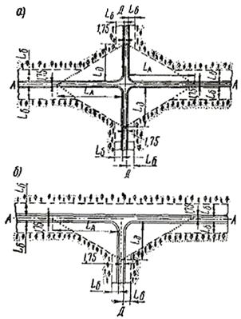
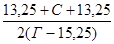
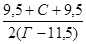
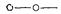
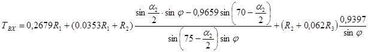
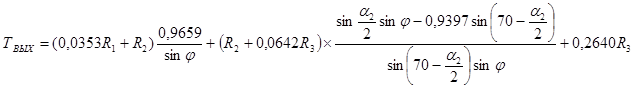
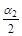
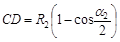
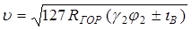
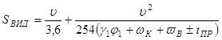

СССР
МИНИСТЕРСТВО ТРАНСПОРТНОГО СТРОИТЕЛЬСТВА
____________________________
ГОСУДАРСТВЕННЫЙ
ВСЕСОЮЗНЫЙ ДОРОЖНЫЙ
НАУЧНО-ИССЛЕДОВАТЕЛЬСКИЙ ИНСТИТУТ (СОЮЗДОРНИИ)
|
Утверждены |
ТЕХНИЧЕСКИЕ
УКАЗАНИЯ
ПО ПРОЕКТИРОВАНИЮ ПЕРЕСЕЧЕНИЙ
И ПРИМЫКАНИЙ АВТОМОБИЛЬНЫХ
ДОРОГ
ВСН 103-74
МИНТРАНССТРОЙ
МОСКВА «ТРАНСПОРТ» 1975
СОДЕРЖАНИЕ
В Указаниях, развивающих и дополняющих СНиП II-Д.5-72 в части пересечений и примыканий автомобильных дорог, определена область применения различных типов пересечений и их конструктивные решения, отражены вопросы проектирования переходном скоростных полос проезжей части, автобусных остановок, площадок для стоянок автомобилей и разделительных полос.
Указания составлены на основе обобщения опыта проектирования и эксплуатации пересечений, исследований и разработок Союздорнии, Союздорпроекта, МАДИ, Гипродорнии, ВНИИ безопасности движения МВД СССР, а также зарубежного опыта. Указания разработаны в Союздорнии канд. техн. наук Ю.С. Крыловым. При подготовке Указаний учтены замечания Союздорпроекта, ВНИИ безопасности движения МВД СССР и Главного управления пути МПС СССР.
|
СССР Министерство транспортного строительства |
Ведомственные
строительные |
ВСН 103-74 |
|
Технические указания по проектированию пересечений и примыканий автомобильных дорог |
Взамен «Технических
указаний по проектированию пересечений и примыканий автомобильных дорог» |
1.1. Настоящие Технические указания распространяются на проектирование автомобильных дорог при новом строительстве и реконструкции, дополняют и развивают СНиП II-Д.5-72 в части пересечении и примыканий автомобильных дорог.
1.2. Проектированию пересечений и примыканий должна предшествовать разработка проекта всей автомобильной дороги в целях комплексного размещения по дороге инженерных обустройств: пересечений и примыканий; площадок для стоянок автомобилей; автобусных остановок; зданий и сооружений дорожной и автотранспортной службы; пунктов ГАИ и объектов по обслуживанию автомобилей, водителей и пассажиров (АЗС, СТО, кемпингов, столовых и т.д.). При этом решают вопросы транспортных связей с прилегающими территориями, совмещения сооружений, удовлетворения разнообразных потребностей пользователей дорог с соблюдением требований СНиП II-Д.5-72.
1.3. Пересечения и примыкания автомобильных дорог должны обеспечивать максимальную безопасность и удобство движения автомобилей с наименьшей потерей времени в пределах пересечения или примыкания. Положение и параметры съездов назначают исходя из интенсивности движения по ним, причем наименьшую потерю времени и преимущественные удобства движения предусматривают для наиболее загруженных съездов.
Пересечения и примыкания проектируют на основе перспективных размеров, состава и характера движения, частоты и удельных размеров движения автомобилей, изменяющих направление движения с одной из пересекающихся (или соединяющихся) дорог на другую. В зависимости от расположения, сходящихся дорог и организации движения потоков автомобилей могут быть пересечения и примыкания.
|
Внесены Государственным всесоюзным дорожным научно-исследовательским институтом (Союздорнии) |
Утверждены Главным техническим управлением Министерства транспортного строительства СССР23 сентября 1974г. |
Срок введения 1 июля 1975г. |
1.4. Безопасность и удобство движения обеспечиваются своевременной видимостью пересечения, хорошей просматриваемостью, понятностью и удобством проезда пересечений и - примыканий.
Своевременная видимость пересечений со всех подъездов для перестроения, торможения, поворотов или пересечения и для пропуска транспортных средств с преимущественным правом проезда достигается: расположением пересечений и примыканий на вогнутых кривых; уширением проезжей части и устройством дополнительных полос; разметкой проезжей части в зоне пересечений; устройством разделительных островков каплевидной формы на второстепенных дорогах; четким и своевременным указанием пути следования; зрительным выделением пересекающей или примыкающей дороги насаждениями или специальными ориентирами; изменением окружающей обстановки дороги в зоне пересечений.
Хорошая просматриваемость в зоне пересечения для своевременного обозрения пути движения достигается: расположением пересечений на вогнутых кривых главных дорог; примыканием второстепенных дорог под углом, близким к прямому; устранением препятствий в зоне видимости на пересечениях и примыканиях; выполнением подъездов второстепенной дороги однополосными (исключение помех видимости рядом стоящими автомобилями); обеспечением видимости для водителей, совершающих левый поворот.
Понятность пересечений и примыканий обеспечивается: конструктивным решением преимущественного проезда; применением простых и широко распространенных типов пересечений; направлением потоков движения четкими кромками проезжей части и их разметкой, кромками островков на второстепенных дорогах и другими направляющими устройствами (ограждения, сигнальные, столбики т.п.); ясным указанием мест переходов для пешеходов и велосипедистов; установкой наглядных схем, знаков и указателей на подходах и в зоне пересечений и примыканий.
Удобство проезда пересечений и примыканий в соответствии с динамическими и геометрическими характеристиками автомобильных дорог достигается: достаточной шириной полос движения; соответствием их направления траекториям движения автомобилей и достаточным их продолжением за пересечением; четким обозначением границ полос движения разметкой; смещением возвышающихся островков от кромок полос движения.
1.5. Пересечения и примыкания автомобильных дорог рекомендуется проектировать на свободных площадках и при рельефе, облегчающем технические решения пересечений, а также на прямолинейных в плане участках соединяющихся дорог. Недопустимо проектировать пересечения в конце или начале участков с большими уклонами значительного протяжения.
1.6. Выбор схемы пересечений и примыкания автомобильных дорог, обоснование технических решений по обустройству пересечений, а также сроков строительства (кроме пересечений между собой дорог IV - V категорий) производят на основе технико-экономических сопоставлений вариантов с учетом пропускной способности, безопасности и удобства движения, строительной стоимости, затрат времени пассажирами, транспортных и дорожно-эксплуатационных расходов, стоимости земель по приведенным затратам, перспективного развития, последующей реконструкции пересечения и архитектурно-эстетических характеристик сооружения.
1.7. Основой для проектирования служат перспективная интенсивность движения потоков по направлениям узла пересечения и ее ежегодный прирост, план местности в районе пересечения в масштабе не мельче 1:5000, их продольные и поперечные профили, типы и состояние покрытий, грунтово-гидрологические и другие технические характеристики соединяющихся дорог.
Все пересечения на дороге следует рассматривать в единой связи друг с другом (тип смежных пересечений и расстояние между ними, обеспеченность транспортными связями прилегающих территорий с дорогой).
В сложных узлах с большим количеством ответвлений в целях уменьшения площади, необходимой для размещения пересечения, элементы соединительных ответвлений следует проектировать исходя из минимальной расчетной скорости движения. При этом в зависимости от категорий пересекающихся дорог расчетную скорость принимают равной для пересечений в одном уровне от 15 км/ч и для пересечений в разных уровнях от 40 км/ч с доведением до расчетных скоростей на полосах движения основных потоков пересекающихся дорог.
1.8. В целях уменьшения помех от местного движения, повышения скоростей, удобства и безопасности движения основных потоков на автомобильных дорогах I, II и III категорий, количество пересечений, съездов и въездов должно быть возможно меньшим. Пересечения и примыкания на дорогах I и II категорий вне пределов населенных пунктов следует проектировать, как правило, не чаще чем через 5 км, а на дорогах III категории - не чаще чем через 2 мм с учетом конкретных условий: застройки, начертания существующей сети дорог и т.д.
Местные дороги должны быть подведены к запроектированным пересечениям и примыканиям с использованием для этой цели тракторных и параллельных путей (п. 2.6) или они должны пересекать дороги I-III категорий в разных уровнях без устройства съездов и въездов с учетом требований п. 1.15. В последнем случае размещение по протяжению не нормируется. Рекомендуется со съездами на дороги IV, V категорий совмещать съезды на площадки отдыха с отнесением их на расстояние укрепленных участков (см. п. 1.12), но не меньше расстояния боковой видимости от основных дорог.
1.9. В случае проложения дорог I - III категорий через населенные пункты пропуск местного движения, как правило, следует предусматривать по параллельным улицам и дорогам, с которых устраивают въезды на основные дороги в начале и конце населенного пункта с соблюдением требований норм проектирования улиц, дорог и площадей населенных мест. При невозможности использования параллельных улиц и дорог следует предусматривать устройство дополнительных полос или проездов, как правило, отдельных от основных полос движения на дорогах I - II категорий независимо от размеров местного движения, а на дорогах III категории - при интенсивности местного движения более 30 % от транзитного. Во всех случаях необходимо разрабатывать мероприятия по организации движения с минимальными помехами транзитному движению. Выезд с прилегающих территорий населенных пунктов к дорогам предусматривают или на параллельные улицы и дороги, или на дополнительные полосы (проезды). При совмещении автомобильных дорог с городскими скоростными и магистральными дорогами и улицами пересечения следует проектировать в разных уровнях.
1.10. При проектировании тоннелей в городах следует руководствоваться «Указаниями по проектированию городских транспортных и пешеходных тоннелей», а три проектировании пешеходных переходов вне населенных пунктов дополнительно учитывать требования п. 4.4 СНиП II-Д.5-72.
1.11. Места расположения, типы съездов и въездов, а также другие решения по их устройству при реконструкции автомобильных дорог I - III категорий согласовывают с соответствующими дорожно-эксплуатационными организациями.
1.12. Все въезды и съезды на дороги I - III категорий на подходах к основной дороге должны иметь твердые покрытия: при песчаных и супесчаных грунтах на протяжении 50 м, при легких суглинистых грунтах - 100 м, а при глинистых и тяжелых суглинистых грунтах - 150 м. При проектировании въездов на дороги IV категории с твердым покрытием следует предусматривать устройство твердых покрытий на въездах на протяжении не менее 25 м.
На съездах и въездах, как правило, устраивают покрытия переходных типов, используя для них местные каменные материалы и отходы промышленности, выполняя их с учетом возможности содержания в чистоте и отличающимися по внешнему виду от покрытия главной дороги. Переход от укрепленного съезда к грунтовой дороге следует выполнять в виде щебеночной или гравийной призмы переменной толщины протяжением 6 м.
При необходимости следует предусматривать мероприятия по предупреждению возникновения неорганизованных въездов на участки укрепленных съездов с придорожной полосы.
1.13. Обочины съездов и въездов с твердыми покрытиями на длине участков, установленной в п. 1.12, следует укреплять на ширину не менее 0,75 (0,5) м.
1.14. При пересечении дорог I и II категорий с автомобильными и железными дорогами электрическое освещение проектируют на всех съездах пересечений и подходах, по основным пересекающимся дорогам (I и II категории) на расстоянии не менее 250 м. На пересечениях автомобильных дорог в одном уровне рекомендуется предусматривать освещение на протяжении не менее чем на 100м от пересечения при суммарной интенсивности движения сна период сдачи в эксплуатацию более 1000 авт./сут. Освещение пересечения или примыкания одним светильником в центре недопустимо. При расположении в зоне пересечений и примыканий автобусных остановок, площадок для стоянок автомобилей, пешеходных переходов, пешеходных и велосипедных дорожек, размещенных на обочине, и т.д. следует обеспечить освещение прилегающих участков на расстоянии не менее 100 м от границ инженерного обустройства в обоих направлениях движения.
Средняя яркость покрытий указанных участков дорог должна быть не менее 0,8 нт.
Если расстояние между соседними освещенными участками составляет менее 250 м, рекомендуется устраивать непрерывное освещение дороги, исключающее чередование освещенных и неосвещенных участков.
Размещение светильников должно способствовать подчеркиванию главной дороги, ориентированию водителей и освещению опасных зон (пересечения транспортных потоков, переходно-скоростные полосы, изменения-направления движения, пешеходные переходы и др.). Опоры светильников на прямолинейных участках дорог следует, как правило, располагать за бровкой земляного полотна, особенно при его высоте до 2 м. В исключительных случаях допускается располагать отдельные опоры на обочине или на разделительной полосе (при ее ширине не менее 5 м). Расстояние от кромки проезжей части до ближайшей грани опоры в этом случае должно быть для дорог I - II категорий не менее 2 м и для дорог других категорий - не менее 1,75 м. При этом следует учитывать возможность установки ограждений барьерного типа перед опорами с соблюдением требований по обеспечению ширины полосы безопасности применительно к габаритам путепроводов (см. п. 3.25), ширины ограждений и зазора между ограждением и опорой не менее 0,5 м.
Электроснабжение для освещения дорог осуществляют от сети общего пользования или от сети ближайшего промышленного предприятия. Управление освещением предусматривают централизованным от ближайшего городского диспетчерского пункта.
1.15. При проектировании дорог I - III категорий полевые дороги и пути прогона скота отводят под ближайшие искусственные сооружения с соответствующим их обустройством. В случае отсутствия на протяжении больше 2 мм подходящих для этих целей отверстий искусственных сооружений при необходимости следует предусматривать устройство специальных сооружений или путепроводов с наименьшими габаритами (при отсутствии Специальных заданий и требований по габариту):
|
|
Ширина, м |
Высота, м |
|
Для полевых дорог |
6 |
4,5 |
|
Для путей прогона скота |
4 |
2,5 |
Для обеспечения лучшей видимости на дорогах высших категорий и предупреждения появления помех на них полевые дороги рекомендуется проектировать снизу, используя для этого -рельеф местности и участки насыпей.
При наличии пешеходного движения необходимо предусматривать тротуары.
Назначая отверстия искусственных сооружений, необходимо учитывать возможность стадийного развития полевых дорог и перевода их в автомобильные дороги IV - V категорий общей сети, а при пересечении дорог с 6 - 8 полосами движения необходимо дополнительно обеспечивать достаточную освещенность путем увеличения габарита сооружения или устройства искусственного освещения.
1.16. В зоне пересечений сопряжение земляного полотна с прилегающей территорией выполняется по аналогии с соседними участками дорог с учетом требований проектирования земляного полотна.
Направляющие устройства в виде сигнальных столбиков предусматривают на пересечениях в одном уровне при высоте насыпей до 3 м с внутренней стороны закруглений в пределах кривых: при радиусе менее 60 м - через 5 м и при радиусе от 60 до 400 м - через 10 м. На подходах к пересечениям сигнальные столбики устанавливают в соответствии с требованиями СНиП II-Д.5-72. При этом учитывают высоту насыпей и заложение откосов, проложение дороги на косогорах, вблизи оврагов, болот, водотоков, а также на кривых в плане. На съездах пересечений в разных уровнях сигнальные столбики устанавливают при высоте насыпей до 3 м на всем протяжении съездов. Расстояние между столбиками принимают в зависимости от радиуса по СНиП II-Д.5-72.
Ограждения барьерного типа устанавливают на опасных участках и на подходах к ним не менее чем за 25 м. Концевые элементы для предупреждения прямого наезда оформляют с учетом эстетических требований. Барьерные ограждения предусматривают на участках насыпей высотой 3 м и больше, ими же ограждают промежуточные опоры путепроводов на пересечениях в разных уровнях, а также участки, перечисленные в пп. 10.12 - 10.14 СНиП II-Д.5-72. Барьерные ограждения на дорогах I - II категорий устанавливают от кромки проезжей части не менее чем в 3 м, а на дорогах III категории-1,75 м; их высота должна быть не меньше 0,8 м. На съездах пересечений в разных уровнях и в зоне переходно-скоростных полос ограждения проектируют с учетом требований пп. 3.13 и 3.21.
1.17. На пересечениях и примыканиях необходимо производить разметку проезжей части в соответствии с требованиями ГОСТ 13508-74, учитывая рекомендации разделов 2 - 4 и 7.
1.18. В зоне пересечений и примыканий следует предусматривать расстановку знаков и указателей в соответствии с требованиями ГОСТ 10807-71 “Знаки дорожные” так, чтобы они четко воспринимались водителями при движении днем и ночью. Основные знаки на дорогах I - III категорий, особенно на многополосных, рекомендуется размещать над проезжей частью на специальных рамах.
На подъездах к сложным узлам пересечений и примыканий дорог необходимо устанавливать общую схему пересечения с изображением траекторий движения на узле.
При размещении в зоне пересечений и примыканий элементов обстановки пути и вспомогательных устройств, которые могут представлять боковые помехи (крайние выступающие части знаков, опоры рам и т.п.), все элементы следует располагать, как правило, за бровкой земляного полотна, но не ближе 1,75 м от кромки проезжей части дорог. Опоры знаков, указателей и т.д. целесообразно устанавливать на присыпаемых к земляному полотну специальных призмах - банкетах.
При наличии в зоне пересечений переходно-скоростных полос рекомендуется применять указательные знаки и указатели в соответствии с п. 4.11. Примеры расстановки знаков на наиболее распространенных пересечениях приведены в приложении 1.
2.1. Пересечения и примыкания автомобильных дорог II категории с дорогами IV и V категорий, а также дорог III, IV и V категорий между собой при перспективной суммарной интенсивности движения на пересечении менее 4000 авт./сут в физических транспортных единицах проектируют в одном уровне. При суммарной интенсивности движения от 1000 до 4000 авт./сут необходимо принимать схемы пересечений и примыканий с переходно-скоростными полосами, зонами безопасности, островками на второстепенных дорогах и другими мероприятиями по канализированию потоков и четкой организации движения в соответствии с распределением потоков по направлениям.
2.2. При проектировании участков дорог в зоне пересечений и примыканий не следует принимать наименьшие радиусы горизонтальных и вертикальных кривых, переходные кривые и другие элементы плана и профиля. Следует придерживаться рекомендуемых значений, особенно для элементов главной дороги.
2.3. Основные требования к профилю я плану дорог в зоне пересечений сводятся к следующему:
а) продольный уклон на расстоянии видимости поверхности дороги должен быть не более 40 ‰ в целях обеспечения удовлетворительных условий для переменных режимов движения (торможения, разгона, переплетения, поворота) и исключения значительных отрицательных поперечных уклонов в направлении действия центробежных сил при поворотах;
б) для улучшения обзорности пересечения или главной дороги рекомендуется обе дороги или хотя бы второстепенную дорогу проектировать с применением вогнутых вертикальных кривых;
в) на пересекающихся дорогах не рекомендуются вертикальные выпуклые кривые, так как это приводит к ухудшению условий видимости, особенно по главной дороге. При невозможности избежать этого следует использовать средства зрительного ориентирования (насаждения, ограждения и т.д.);
г) продольный уклон второстепенной дороги на расстоянии 20 м от кромки проезжей части главной дороги не должен превышать 20 ‰, в целях обеспечения устойчивого положения автомобиля при сложных режимах движения (торможении, повороте, разгоне) и обзоре главной дороги;
д) оси пересекающихся или примыкающих дорог должны образовывать угол, близкий к прямому. В случаях пересечения дорог под острым углом целесообразно, изменив трассу второстепенной дороги, приблизить угол пересечения к прямому с учетом местных условий (рис. 1). Если транспортные потоки не пересекаются, а сливаются или разветвляются (участки съезда или въезда), то указанное требование можно не учитывать. При слиянии или разветвлении неравнозначных дорог главным дорогам следует обеспечить большую плавность с четким выделением траекторий основных потоков;
Рис. 1. Спрямление угла пересечения дорог:
а и б - рекомендуемые; в - не рекомендуемое
е) главная дорога по возможности должна быть прямолинейной. Следует иметь в виду, что на кривых малых радиусов, особенно с большим центральным углом, отвлекается внимание водителей на движение по ним;
ж) на участках виражей главной дороги устраивать примыкания нежелательно, так как не обеспечивается достаточная видимость для водителей автомобилей, пропускающих движение. С внешней стороны кривой примыкания более приемлемы, но и при этом покрытие главной дороги при односкатном поперечном его уклоне плохо просматривается подъезжающими с второстепенных дорог водителями и они не могут точно оценить скорость движения автомобилей по главной дороге. Кроме того, при проектировании примыкания на кривых необходимо учитывать условия движения поворачивающих с главной и второстепенной дорог автомобилей на участках с обратным поперечным уклоном;
з) рекомендуется обеспечить видимость пересечения из условия обгона, особенно на главной дороге. Расстояние видимости из условия остановки должно быть обеспечено в любом случае (п. 2.13).
2.4. Схемы пересечений и примыканий дорог в одном уровне рекомендуется применять:
схему по рис. 2, а - при пересечении дорог IV и V категории. Дороги V категории на протяжении не менее 20 м от кромки пересекаемой дороги должны быть двухполосными. Разметкой выделяют проезжую часть с преимущественным правом проезда;
схему по рис. 2, б - при пересечении дорог III категории с дорогами IV - V категорий при менее 100 выходящих из потока и входящих в него автомобилей в сутки (в физических транспортных единицах);
схемы по рис. 2, в, г, д, е - на пересечениях и примыканиях дорог II - III категорий при более 100 выходящих из потока автомобилей.
На главных дорогах выделение полос движения или других устройств по организации движения (островки и т.д.) выполняют разметкой соответствующих зон без возвышения их над проезжей частью.
2.5. В районах с непродолжительным снеговым покровом для обеспечения более четкой организации движения на пересечениях (см. рис. 2, б - е) каплевидные островки и островки-указатели на второстепенных дорогах рекомендуется устраивать возвышающимися на 10 - 15 см над проезжей частью. Для усиления оптического эффекта бордюр островка должен быть окрашен чередующимися черно-белыми полосами в соответствии с требованиями ГОСТ 13508-74.
Форма каплевидных островков определяется траекториями движения грузовых автомобилей при поворотах. Островки должны быть хорошо различимы на подъезде по второстепенной дороге к пересечению (приложение 2). Островок треугольной формы смещают от кромки основной полосы на 1 м, а длина его должна быть не менее 5 м. В стесненных условиях не устраивают островки треугольной формы, а при соответствующем обосновании и каплевидные островки. В случае примыкания под острым углом справа (при подъезде по второстепенной дороге) целесообразно устройство островка треугольной формы для выделения автомобилей, поворачивающих направо со второстепенной дороги.
Рис. 2 Схемы пересечений а примыканий автомобильных дорог в одном уровне:
1 - каплевидный островок; 2 - островок треугольной формы. На схемах г и е пунктиром показаны полосы разгона. На каплевидных островках белыми кружкам, показано расположение знаков объезда островков
2.6. При наличии в зоне пересечения более четырех, а в зоне примыкания более трех подходов дорог следует привести сложный узел к основным простым схемам (рис. 3), изменяя расположение некоторых дорог. Расстояние l устанавливают из условия получения участка достаточного протяжения для автомобилей, ожидающих на второстепенной дороге, но не менее 20 м. При этом длина участков с твердыми покрытиями на подходах с каждой из местных дорог к главной должно соответствовать п 1.12.
Приведение сложных схем к простым должно предусматривать мероприятия, предупреждающие движение автомобилей по кратчайшим направлениям с выездом в непредусмотренных местах.
При большой сложности приведения к простым схемам возможно на отдельных дорогах организовать одностороннее движение.
2.7. При реконструкции примыканий в сложных условиях возможны изменения планировки их для улучшения условий движения на главной дороге с обеспечением оптического трассирования (рис. 4). Это допустимо лишь при исключении проложения трассы основной дороги по прямой или по кривой большого радиуса и при возможности выполнения примыкания второстепенной дороги под углом, близким к прямому.
2.8. В отдельных случаях вместо пересечения допускается проектировать два смещенных примыкания второстепенной дороги (рис. 5). Смещение примыканий относительно друг друга выполняют в тех случаях, когда необходимо обеспечить пропуск автомобилей по главной дороге при недостаточной видимости и невозможно принять другие решения (например, при расположении пересечения на выпуклой кривой или при впечатлении непрерывности второстепенной дороги). Смещение примыканий допустимо при отсутствии перспективы реконструкции пересечения, а также когда пересекающий поток на второстепенной дороге или интенсивность движения на главной дороге незначительны, при которых дополнительная интенсивность между примыканиями не вызовет существенных помех. Смещение вправо (см. рис. 5, а) предпочтительнее, чем влево (см. рис. 5, б).
Рис. 3. Приведение сложных узлов (1 - 4) к простым схемам (à - г) с учетом проложения главной дороги
Рис. 4. Схемы изменения примыканий с улучшением условий движения на главной дороге:
а - исходные схемы; б - вариант без островков и переходно-скоростных полос; в - вариант с островками и полосой торможения для левого поворота
2.9. Смещение примыканий с расположением левоповоротных полос на главной дороге в один ряд проектируют с учетом размещения полос с отгонами для левого поворота и выполнения разметки между ними. Левоповоротные полосы на главной дороге можно устраивать параллельными между собой, но при этом необходима разметка для разделения встречных потоков. В связи с многополосностью участка и переплетением потоков следует предусматривать освещение пересечения и знаков, а для четкой организации движения разрабатывать систему указателей и маршрутных схем.
2.10. При сложности устройства пересечений по схемам рис. 2 допускается проектировать кольцевые пересечения, например, когда соединяются более четырех примыканий дорог, а приведение к простым схемам затруднено, или когда интенсивность движения на пересекающихся дорогах одинакова или отличается не более чем на 20 %, а число автомобилей с левоповоротным движением составляет не менее 40 % от интенсивности на пересекающихся дорогах.
На магистральных дорогах большого протяжения в загородных условиях кольцевые пересечения не рекомендуются.
При проектировании кольцевых пересечений необходимо обеспечить своевременную информацию об их наличии, их видимость из условия обгона и четкое выделение на окружающем фоне, а в ночное время - освещение с помощью светильников, установленных против каждого въезда. Диаметр центрального островка рекомендуется принимать равным 100 м, а наименьший - 60 м. Кольцевая проезжая часть должна иметь ширину не менее 11 м.
Рис. 5. Примеры смещения примыканий второстепенных дорог:
а - вправо; б - влево; 1 - разметка островков разделяющих; 2 - то же, направляющих; 3 - разметка зоны перед островком каплевидным; 4 - то же, перед треугольным
2.11. Минимальный радиус сопряжения (по внутренней кромке проезжей части) на пересечениях и примыканиях принимают с учетом категории дороги, с которой происходит съезд, независимо от угла пересечения и примыкания: при съездах с дорог I, II и III-п категорий не менее 25 м, с дорог III и IV-п категорий - 20 м и с дорог IV - V категорий - 15 м. Если сопряжение выполняется под тупым углом, рекомендуется рассмотреть возможность увеличения радиусов до 30 - 50 м. При расчете на регулярное движение автопоездов радиусы кривых на съездах следует увеличивать до 30 м.
2.12. Сопряжение пересекающихся дорог должно включать входные и выходные переходные кривые в соответствии с траекторией движения автомобиля (при переходе с прямой на кривую н смещения при поворотах задних колес автомобиля по отношению к передним). Переходные кривые сопряжения могут быть заменены круговыми кривыми (см. рис. 2, а) из условия сопряжения входной кривой угла в 15° и выходной кривой - 20°. Радиус входной кривой R1 принимают равным двум минимальным радиусам круговой кривой на сопряжении R2 (п. 2.11), а радиус выходной кривой R3 - трем наименьшим радиусам сопряжения пересечения для второстепенной из пересекающихся дорог (см. приложение 2).

Рис. 6. Схемы обеспечения видимости:
а - на пересечениях автомобильных дорог в одном уровне; б - то же, на примыканиях; La и Lä - расстояние видимости поверхности дороги; Lá - расстояние боковой видимости. Пунктиром показана граница зоны видимости
2.13. Обеспечение видимости в местах расположения пересечений и примыканий дорог - важнейший фактор организации движения и его безопасности. В зоне пересечения или примыкания необходимо обеспечить видимость водителям, подъезжающим по главной и второстепенной дорогам, из условия остановки автомобилей до пересекаемых полос движения (рис. 6).
Расстояние видимости поверхности дороги Là, и Lä должны соответствовать расчетным скоростям движения на пересекаемых дорогах (А- Л и Д-Д) и продольным уклонам на подходах (табл. 1).
Таблица 1
|
Продольный уклон, ‰ |
Расчетная скорость, км/ч |
||||||
|
150 |
120 |
80 |
60 |
50 |
40 |
||
|
Минимальные расстояния видимости поверхности дороги, м |
|||||||
|
+ 40 |
230 |
160 |
130 |
90 |
65 |
50 |
40 |
|
+ 20 |
240 |
165 |
135 |
95 |
70 |
55 |
45 |
|
0 |
250 |
175 |
140 |
100 |
75 |
60 |
50 |
|
- 20 |
260 |
180 |
145 |
105 |
80 |
65 |
55 |
|
- 40 |
270 |
190 |
150 |
110 |
85 |
70 |
60 |
При этом расположение глаз водителя принимают на расстоянии 1,75 м от кромки проезжей части и на высоте 1,20 м над проезжей частью. Кроме того, главная дорога при приближении к пересечению должна просматриваться на расстоянии, больше приведенного в табл. 1, для своевременного фиксирования пересечения водителями автомобилей, движущихся по главной дороге, и для возможности оценки обстановки на ней (обзорности) водителями автомобилей, остановившихся на второстепенной дороге (рис. 7). Это необходимо при расположении пересечений в зоне вертикальных выпуклых и горизонтальных кривых для назначения их радиусов. Автомобиль, подъезжающий по второстепенной дороге, останавливается в 10 м от кромки проезжей части главной дороги. Расстояние обзорности Lобз соответствует расстоянию видимости из условия обгона и принимается не меньше 600 м. На дорогах III - V категорий, если не предполагается в перспективе перевод дороги в более высокую категорию, можно уменьшить Lобз на дорогах III категории до 400 м, на дорогах IV категории до 300 м и на дорогах V категории до 200 м.
Рис. 7. Стена видимости по главной дороге и обзорности с второстепенной
В пределах зоны видимости посадка насаждений и застройка не допускаются, а имеющиеся должны быть устранены, если они не представляют собой особой ценности.
2.14. Велосипедные дорожки в зоне пересечений и примыканий целесообразно выносить за пределы земляного полотна. Особенно это важно при наличии полос для правого поворота.
При проектировании велосипедных дорожек рекомендуется руководствоваться следующими положениями:
велосипедные дорожки, параллельные главной дороге, пересекают второстепенную на некотором расстоянии от главной дороги (рис. 8, а), переход размечают;
Рис. 8. Схемы проложения велосипедных дорожек и тротуаров в зонах пересечений:
1- велосипедная дорожка или тротуар; 2- переход
велосипедные дорожки пересекают второстепенные дороги по возможности под прямым углом и проходят через каплевидный островок, но не через островок треугольной формы. Бордюр, окаймляющий островки, на ширину велосипедной дорожки заглубляют;
перед проезжей частью дорог, не менее чем за 3 м, велосипедная дорожка должна иметь прямой участок, с тем чтобы велосипедист мог свободно ориентироваться и не отвлекался на езду по кривым;
переходы велосипедных дорожек через главные дороги проектируют по возможности через островок треугольной формы (рис. 8, б), не допуская пересечения полосы левого поворота с главной дороги. Для исключения проезда между ожидающими автомобилями велосипедную дорожку располагают перед левоповоротной полосой главной дороги (рис. 8, в, г).
2.15. При проектировании пешеходных дорожек в зоне пересечений руководствуются теми же положениями, что при проектировании велосипедных дорожек. Возможно совмещение велосипедных с пешеходными дорожками. Необходимо стремиться к уменьшению пути следования пешеходов.
2.16. В зонах пересечений и примыканий необходимо устанавливать знаки и указатели в соответствии с требованиями ГОСТ 10807-71.
На подходах дорог устанавливают предупреждающие знаки о наличии впереди пересечений и значимости пересекаемой дороги (главная или второстепенная). Знаки, предупреждающие о пересечении с главной дорогой, должны быть продублированы знаком 1.6 «Пересечение с главной дорогой» с табличкой 5.2 а по ГОСТ 10807-71. Знак «Проезд без остановки запрещен» (2.15) устанавливают лишь в случаях:
недостаточной видимости с второстепенной на подъезде к главной дороге;
сложности оценки скорости движения автомобилей по главной дороге из-за местных условий (например, примыкания с внутренней стороны кривой).
Как правило, перед всеми пересечениями дорог необходимо устанавливать знаки «Предварительное указание направлений» (4.14), а в зоне пересечений - знаки «Указатели направлений» (4.15). Лишь на дорогах IV - V категорий в некоторых случаях достаточно одного знака «Указатель направления». Расстояние от знака «Предварительное указание направлений» до начала отгона переходно-скоростных полос левого (правого) поворота или до пересечения должно быть не менее 300 м. На дорогах I - II категорий рекомендуется установка дополнительного знака 4.14 за 800 м. Знак 4.15 «Указатель направлений» следует размещать справа по ходу движения на присыпаемых к земляному полотну банкетах.
При наличии полос торможения знаки устанавливают в соответствии с указаниями п. 4.11. При этом рекомендуется дублировать знак 4.15, устанавливая дополнительно их на островке треугольной формы (рис. 9). При размещении знаков необходимо обеспечивать их видимость.
Рис. 9. Пример расположения указательных знаков на треугольных и каплевидных островках:
1 - «Указатель направлений»;
2 - «Объезд»
Знак «Направление объезда препятствия» устанавливают на каплевидных островках для организации движения, причем знак на передней части каплевидного островка поворачивают на такой угол к оси второстепенной дороги, чтобы он был хорошо виден еще в начале полосы левого поворота с главной дороги. Островок в месте установки знака должен иметь ширину не меньше 1,5 м.
2.17. Разметку в зонах пересечений и примыканий выполняют в соответствии с требованиями ГОСТ 13508-74. Особое внимание должно быть уделено:
четкому выделению преимущественного права проезда по главной дороге при подъезде к ней с второстепенной дороги (разметить основные полосы движения, нанести треугольники или стоплинии, сделать различными внешний вид покрытия второстепенных дорог и переходно-скоростных полос, отделить переходно-скоростные полосы от основных прерывистой и сплошной линиями);
обеспечению видимости в любое время суток контуров маркированных зон на главной дороге, направляющих транзитные потоки мимо полос левого поворота, по возможности выполняя их рефлектирующими видами разметки;
выполнению разметки в виде указательных стрел на проезжей части на пересечениях с переходно-скоростными полосами для обозначения разрешенных направлений движения;
разметке переходов для пешеходов и велосипедистов.
3.1. Пересечения автомобильных дорог I категории с дорогами всех категорий, дорог II категории с дорогами II и III категорий, а также дорог III категории между собой (при перспективной суммарной интенсивности на 20-й год на пересечении более 4000 авт./сут) следует проектировать в разных уровнях. Суммарная интенсивность движения на пересечении может быть определена как сумма подъезжающих к пересечению (или отъезжающих от него) автомобилей.
3.2. Пересечения дорог в разных уровнях следует проектировать с таким расчетом, чтобы на дорогах I и II категорий не было левых поворотов, при которых основные потоки движения пересекаются в одном уровне. При этом должно быть обеспечено безопасное и удобное движение автомобилей с расчетными скоростями по основным направлениям и минимальное время прохождения автомобилями узла пересечения.
На пересечениях с дорогами III категории и ниже разрешается принимать схемы узлов в разных уровнях, которые допускают пересечение основных направлений движения на этих дорогах (не полные транспортные развязки). При этом следует учитывать перспективное развитие дорог и пересечения с минимальной перестройкой.
3.3. При пересечении дорог I и II категорий в разных уровнях для четкой организации движения основных и влившихся с местных дорог потоков целесообразно обеспечить развороты без пересечения в одном уровне прямых направлений движения на этих дорогах.
3.4. При интенсивностях движения на пересекаемых дорогах, близких к их пропускной способности, следует проверять соответствие пропускной способности участков дорог в зоне пересечений в местах выездов (как с левоповоротных, так и с правоповоротных съездов) фактическим интенсивностям движения и при необходимости корректировать ширину проезжей части (число полос движения) рассматриваемых участков.
3.5. Расположение путепроводов и эстакад на пересечениях и примыканиях дорог в разных уровнях должно быть подчинено наилучшему проложению трасс пересекающихся дорог и наиболее целесообразной компоновке узла пересечений в соответствии с пп. 1.2 - 1.12.
3.6. В зависимости от размеров, состава и распределения движения по направлениям, а также от местных условий, можно применять различные схемы развязок в разных уровнях.
Пересечение типа «клеверный лист» (рис. 10, а) - наиболее распространенный и сравнительно недорогой.
Неполный «клеверный лист» с четырьмя съездами (рис. 10, б) целесообразно применять при стадийном строительстве, в ходе которого предполагается дальнейшая достройка левоповоротных съездов, и при пересечении с второстепенной дорогой. При отсутствии перспективы развития пересечения в полный «клеверный лист», в соответствии с распределением потоков движения и местными условиями, схема может быть изменена в «ромбовидный» тип пересечения (на рис. 10, б изображен пунктиром), в котором места примыкания правоповоротных съездов к второстепенной дороге приближаются к путепроводу.
Рис. 10. Схемы пересечений автомобильных дорог в разных уровнях
Неполный «клеверный лист» с двумя двухпутными съездами в смежных секторах (рис. 10, в) следует использовать при пересечении с второстепенной дорогой в стесненных условиях (при прохождении второстепенной дороги вдоль железной дороги, реки и т.д.). На рис. 10, в пунктиром представлен вариант с вытянутыми левоповоротными съездами, который занимает большую площадь и увеличивает пробег автомобилей.
Распределительное кольцо с пятью путепроводами (рис. 10, г) возможно при пересечениях дорог I и II категорий с большой интенсивностью движения и значительным удельным весом поворачивающих налево автомобилей, а также в стесненных условиях.
Распределительное кольцо с двумя путепроводами (рис. 10, д) можно применять при пересечении дорог I и II категорий с дорогами III - V категорий и при большой интенсивности движения поворачивающих налево автомобилей или в стесненных условиях; вариант «вытянутое кольцо» (на рис. 10, д показан пунктиром) занимает большую площадь и удлиняет путь поворачивающих налево автомобилей.
«Турбинной» тип пересечения (рис. 10, е) имеет более высокую строительную стоимость по сравнению с типом «распределительное кольцо». В зависимости от распределения потоков по направлениям он может быть выполнен с элементами «клеверного листа» (грушевидный тип пересечения).
При пересечении существующей дороги или дорог разных категорий под углом менее 30° применяется линейное пересечение с искривлением трассы одной дороги (рис. 10, ж); при новом строительстве всего узла дорог одной категории можно видоизменить эту схему путем искривления трасс обеих дорог.
Рис. 11. Схемы примыканий автомобильных дорог в разных уровнях:
а - примыкание по типу «трубы»; б - листовидный тип; в - кольцевой тип; г - грушевидный тип; д - разветвление по типу треугольника
Направленный тип пересечения (рис. 10, з) выполняется в четырех уровнях. Строительная стоимость этого пересечения большая, но оно обеспечивает высокие скорости движения и оптимальные транспортно-эксплуатационные показатели. Пересечение по типу криволинейного четырехугольника (рис. 10, и) требует 16 путепроводов, что значительно удорожает строительную стоимость; автомобили при этом типе пересечения осуществляют движение по кратчайшим направлениям.
В зависимости от распределения потоков по направлениям è от местных условий могут применяться развязки директивного типа, компонуемые из отдельных элементов различных типов пере сечений.
3.7. Примыкания могут быть запроектированы по одной из рекомендуемых схем (рис. 11).
«Труба» - сравнительно недорогое и компактное примыкание - применяется при отсутствии перспективы развития примыкания в пересечение. Если такое развитие предполагается, предпочтительнее «листовидный» или «кольцевой» тип. В зависимости от местных условий и распределения потоков движения может быть применено зеркальное изображение схемы «труба» (рис. 11, а). «Кольцевой» тип более компактен, но применим в случае перспективного развития примыкающей дороги в дорогу не выше III категории. «Грушевидный» тип наиболее приемлем, если в перспективе примыкание не будет переводиться в пересечение и если примыкающая дорога I - II категорий; он создает лучшие, по сравнению с другими типами, условия для движения по примыкающей дороге. Разветвление по типу «треугольника» рекомендуется для дорог II - III категорий при отсутствии перспективы перевода в пересечение.
Возможны и другие варианты примыканий на основе изменений отдельных элементов примыканий и пересечений. При этом нужно учитывать распределение потоков и местные условия.
3.8. Элементы съездов дорог необходимо рассчитывать и назначать исходя из переменной скорости движения.
3.9. Правоповоротные съезды на пересечениях в разных уровнях выполняют, как правило, в виде сочетания переходных и круговых кривых, а также прямых вставок. При острых углах примыкания эти съезды проектируют в виде единой кривой без прямых вставок. Сопряжение с применением обратных кривых допускают лишь в исключительных случаях, обязательно с технико-экономическим обоснованием.
Радиусы кривых правоповоротных съездов принимают из условия, чтобы в местах въездов на основные дороги и съездов с них были обеспечены расчетные скорости: для дорог I - II категорий - не менее 80 км/ч (наименьший радиус 250 м), для дорог III категории - не менее 60 км/ч (наименьший радиус 125 м).
При значительном количестве поворачивающих направо автомобилей целесообразно сместить Правоповоротные съезды от центра пересечения (если это обосновано технико-экономическим сопоставлением, проведенным с учетам строительных и транспортно-эксплуатационных затрат), а при острых углах пересечения рекомендуется рассмотреть целесообразность двухпутных съездов для движения в обоих направлениях.
3.10. Левоповоротные съезды пересечений типа «клеверный лист» в плане следует максимально приближать к центру пересечения, выдерживая допустимые параметры элементов плана и профиля. Смещение съездов от центра пересечения, вызывающее излишний пробег автомобилей, должно быть обосновано технико-экономическими расчетами.
Расстояние между концом и началом смежных левоповоротных съездов назначают из условия обеспечения плавного вписывания автомобилей в соответствующие полосы движения. Это расстояние должно составлять не меньше 50 м.
Радиусы кривых левоповоротных съездов на пересечениях в разных уровнях по схеме «клеверный лист» и другим аналогичным схемам следует принимать такими, чтобы обеспечить скорость движения на съездах дорог I - II категорий не менее 50 км/ч и на съездах дорог III категории не ниже 40 км/ч (наименьший радиус - 60 м). Прямые вставки, как правило, не должны допускаться. Элементы левоповоротных съездов назначают по категории дороги, с которой происходит съезд.
Радиусы кривых съездов следует определять на основе расчетных значений используемой доли коэффициентов сцепления в поперечном направлении, заложенных в СНиП II-Д.5-72 и равных:
0,15 при скорости 80 км/ч; 0,16 при скорости 60 км/ч; 0,165 при скорости 50 км/ч и 0,17 при скорости 40 км/ч. При условии устройства покрытий на съездах с повышенной шероховатостью способом специальной поверхностной обработки или втапливания одномерного щебня из высокопрочных пород размером 5 - 10 или 10 - 15 мм, величины коэффициентов могут быть увеличены, но не более чем на 20 % от приведенных значений. При этом радиусы кривых левоповоротных съездов могут быть уменьшены до величины не меньше 50 м.
3.11. Входные переходные кривые левоповоротных съездов типа «клеверный лист» рекомендуется проектировать как тормозные с начальной скоростью не менее 80 км/ч для дорог I - II категорий и не менее 60 км/ч для дорог III категории. Длина переходных кривых определяется из условия обеспечения полной ширины проезжей части съезда в сечении расхождения кромок и последующего отгона виража.
3.12. Ширину проезжей части однопутных левоповоротных съездов на пересечениях типа «клеверный лист» назначают 5,5 м, а правоповоротных соединительных съездов - 5м на всем протяжении без дополнительного уширения на кривых.
3.13. Ширина обочин с внутренней стороны кривых на съездах должна быть не меньше 1,5 м, а с внешней стороны - 3 м. Обочины на всю ширину должны иметь твердое укрепление. При этом рекомендуется выделять сопряжение проезжей части съездов с обочинами через укрепленные полосы шириной 0,5 - 0,75 м, отличными от цвета сопрягаемых элементов.
При установке ограждений ширину внутренних обочин следует назначать с учетом скорости движения на съезде и обеспечения ширины полосы безопасности применительно к габаритам мостов (см. п. 3.25).
3.14. На всех однопутных съездах устраивается вираж с уклоном 20 - 60 ‰ - Увеличение продольного уклона внешней кромки проезжей части на участке отгона виража на съездах не должно превышать 10 ‰.
3.15. Продольный уклон на подходах дорог к путепроводу и съездах должен быть не более 40 ‰.
3.16. Допускаемые наименьшие радиусы вертикальных кривых на отдельных элементах пересечений для дорог разных категорий могут быть приняты по табл. 2.
Таблица 2
Примечания: 1. В знаменателе приведены наименьшие радиусы вертикальных вогнутых кривых, допускаемые в исключительных случаях.
2. Радиусы вертикальных кривых на съездах должны обеспечивать скорости движения, которые допускают радиусы закруглений в плане.
3.17. При расчетной интенсивности на съезде большей, чем пропускная способность одной полосы, следует проектировать двухполосные съезды. Ширина проезжей части двухполосных съездов должна быть не менее 7,5 м с дополнительным уширением на кривых, ширина внешней, обочины - не менее 3 м, внутренней - не менее 1,5 м. Примыкания двухполосных съездов к основной дороге необходимо проектировать с устройством на ней дополнительной полосы протяжением не менее 600 м.
3.18. На дорогах I и II категорий выезд со съездов и въезд на них следует выполнять через полосы разгона и торможения. Минимальная их длина должна приниматься не менее 50 м для дорог I и II категорий и 30 м - для дорог III категории (см. раздел 4).
Полосы разгона и торможения на смежных левоповоротных съездах пересечений типа «клеверный лист» дорог I - II категорий следует объединять (с включением участков дорог над путепроводами и под ними) с соответствующим уширением или увеличением пролетов путепроводов.
При назначении длины полос разгона и торможения на дорогах III категории исходят из необходимости обеспечить скорость съезда с дорог и въезда на них 60 км/ч, руководствуясь положениями раздела 4.
Полосы разгона и торможения отделяют от основных полос движения согласно указаниям пп. 4.8 и 4.9.
3.19. Полосы разгона и торможения должны иметь ширину, равную ширине полосы движения основной дороги, но не менее 3,5 м.
3.20. В местах пересечений, примыканий и съездов с дорог I, II и Ш-п категорий (на которых не предусматривается устройство переходно-скоростных полос) на расстоянии не менее 100 м от кромок пересекаемой дороги в обе стороны необходимо устройство твердых покрытий на обочинах (остановочных полос) шириной 2,5 м. На остальных участках дорог I, II и Ш-п категорий ширина покрытия обочин должна быть не менее 0,75 м, а на дорогах III и IV-п категорий с усовершенствованными покрытиями - не менее 0,5 м. Покрытия на обочинах выполняют в соответствии с требованиями СНиП II-Д.5-72.
3.21. Ширину обочины в местах переходно-скоростных полос (особенно в сложных условиях) можно принимать: 1,5 м для дорог I, II и III-п категорий и 1 м - для дорог остальных категорий. При установке ограждений ширину обочин следует назначать, учитывая скорости на переходно-скоростных полосах, с тем чтобы обеспечить ширину полосы безопасности применительно к габаритам мостов (п. 3.25).
3.22. Габариты путепроводов должны соответствовать категории дороги, определенной с учетом 20-летнего развития движения. Опоры путепроводов и пешеходных мостов располагают:
а) при пересечении автомобильных дорог I - III категорий за пределами земляного полотна - от бровок боковых водоотводных устройств на расстоянии не менее 0,5 м, а при их отсутствии - от бровок земляного полотна на расстоянии не менее 4 м для устоев и опор в виде сплошных стенок и не менее 2 м для опор стоечного типа. При наклонных опорах указанные расстояния принимают на уровне 1 м над проезжей частью, а на уровне низа пролетных строений внутренние грани опор не должны заходить за бровку земляного полотна в сторону проезжей части более чем на 0,5 м;
б) при пересечении дорог IV - V категорий - от бровок земляного полотна не менее 0,5 м, если по условиям видимости не требуется большего отверстия.
На пересечениях автомобильных дорог в разных уровнях при размещении опор следует обеспечивать видимость проезжей, части на крайних полосах движения с учетом расчетных скоростей на них и траекторий движения, особенно на пересечениях типа «клеверный лист» с левоповоротными съездами.
При установке опор путепроводов на разделительной полосе необходимо устраивать ограждения барьерного типа, предохраняющие опоры от наезда автомобилей. Барьерные ограждения должны быть смещены от кромок внутренних полос движения на ширину полос безопасности (не меньше 2 м). Для предупреждения передачи усилий на опоры между барьерным ограждением или его столбами до промежуточных опор путепроводов следует обеспечить зазор не меньше 0,5 м. Ширина разделительной полосы, удовлетворяющая этим требованиям, должна быть не меньше 6 м.
Опоры и устои путепроводов следует окрашивать чередующимися черно-белыми полосами в соответствии с требованиями - ГОСТ 13508-74.
При проектировании путепроводов через автомобильные дороги I категории следует учитывать возможность увеличения числа полос в перспективе, через дороги II категории - возможность перевода в I категорию, а через дороги III категории - во II категорию с переходно-скоростными полосами. Стадийное совершенствование рекомендуется учитывать при перспективной интенсивности 10000 - 15000 aвт./сут для дорог I категории, 5000 - 7000 авт./сут для дорог II категории и 2000 - 3000 авт./сут для дорог III категории.
3.23. Высоту габарита под путепроводами принимают при пересечении:
дорог I - III категорий - 5 м;
дорог IV - V категорий - 4,5 м;
дорог III-п и IV-п категорий - не меньше габаритов по высоте расчетных автомобилей или самоходных машин и установок, намечаемых к пропуску по дороге, плюс 1 м, но не менее указанных выше для соответствующих категорий;
велосипедных и пешеходных дорожек (тротуаров) с - 2,5 м.
Габарит высоты измеряют от наиболее возвышенных отметок проезжей части моста или пересекаемой дороги, покрытия тротуара или велосипедной дорожки.
Рис. 12. Схемы поперечных сечений путепроводов для дорог I категории:
а - при объединенных пролетных строениях без переходно-скоростных полос; б-то же, но с переходно-скоростными полосами; в - при раздельных пролетных строениях без переходно-скоростных полос; г - то же, но с переходно-скоростными полосами; Т - тротуар; ВД - велосипедные дорожки; П - предохранительная полоса; С - разделительная полоса
Целесообразно предусматривать увеличение габарита высоты на 10 - 15 см для усиления дорожной одежды.
3.24. При пересечении существующих автомобильных дорог следует разрабатывать проект их пересечения с учетом реконструкции или постройки по нормативам категории, соответствующей интенсивности движения на перспективу 20 лет. При этом необходимо обеспечить подмостовой габарит по высоте и ширине из условия возвышения и ширины земляного полотна, определенных с учетом категории дороги в перспективе, рельефа, местных условий и водоотвода.
3.25. Ширина габарита путепроводов включает проезжую часть и полосы безопасности (предохранительные полосы - п), а на дорогах I категории дополнительно разделительную полосу (С), в соответствии с рис. 12 и 13 и табл. 3.
Габариты путепроводов на дорогах промышленных предприятий принимают по СНиП II-Д.5-72.
Габарит путепроводов на пересечениях в разных уровнях дорог I и II категорий при устройстве переходно-скоростных полос увеличивают в соответствии с шириной переходно-скоростных полос и их количеством. На путепроводах дорог I и II категорий при отделении переходно-скоростных полос на 0,75 м полосы безопасности уменьшают на эту величину. Разделительные полосы, полосы безопасности и полосы, отделяющие переходно-скоростные полосы от основных полос, должны быть выделены цветом покрытия или разметкой.
Рис. 13. Схемы поперечных сечений путепроводов для дорог II - V категорий:
а - без переходно-скоростных полос; б-с переходно-скоростными полосами
Примечания: 1. При расположении путепроводов на участках кривых в плане габарит и поперечный уклон проезжей части назначают с учетом требований СНиП II-Д.5-72 по устройству дорог на закруглениях.
2 Разделительная полоса на путепроводах дорог I категории должна быть, как правило, такой же ширины, как и на подходах к путепроводам.
3 Конструкции боковых ограждающих устройств на путепроводах, тротуаров и перил должны принимать с учетом как безопасности движения, так и очистки путепроводов от снега и грязи в период эксплуатации.
3.26. Ширину многополосных тротуаров (см. рис. 12), пешеходных мостов и переходов назначают кратной 0,75 м, в зависимости от интенсивности пешеходного движения. На путепроводах с раздельными пролетными строениями для каждого направления движения тротуары устраивают с одной стороны. При отсутствии регулярного пешеходного движения (в сутки менее 200 пешеходов) предусматривают только служебные тротуары шириной 0,75 м.
Таблица 3
|
Категория дороги |
Число полос движения, шт. |
Ширина проезжей части, м |
Ширина полосы безопасности , м |
Габарит путепровода (Г), м |
Ширина тротуара, м |
|
I |
6 |
(11,25) 2 |
2,0 |
 |
1,5 |
|
I |
4 |
(7,5) 2 |
2,0 |
 |
1,5 |
|
II |
2 |
7,5 |
2,0 |
11,5 |
1,5 |
|
III |
2 |
7,0 |
1,5 |
10 |
1 |
|
IV |
2 |
6,0 |
1,0 |
8 |
1 |
|
V |
1 |
4,5 |
1,25 |
7 |
1 |
Примечание. В знаменателе приведены габариты при раздельных пролетных строениях для каждого направления движения.
3.27. Велосипедные дорожки (см. рис. 12) на путепроводах располагают между тротуаром и ограждениями, отделяющими проезжую часть от велосипедной дорожки, устраивая дополнительные перила в зоне установки ограждений. Со стороны тротуара велосипедные дорожки отделяют продольной разметкой.
3.28. На пересечениях в разных уровнях следует разрабатывать мероприятия по обеспечению боковой видимости, видимости при движении па кривых и видимости в зонах выезда со съездов на автомобильные дороги (рис. 14).
Рис. 14. Обеспечение видимости на пересечениях в разных уровнях типа «клеверного листа»:
1 - границы зоны видимости внутри кривых; 2 - границы зоны боковой видимости; 3 - границы зовы видимости на въездах со съездов на магистраль
Минимальные расстояния боковой видимости от кромки проезжей части следует принимать 25 м для дорог I - III категорий и 15 м для дорог IV - V категорий. Боковая видимость обеспечивается путем планировки и расчистки прилегающей территории. Тротуары и велосипедные дорожки рекомендуется удалять от земляного полотна на расстояние не меньше боковой видимости.
На кривых в плане с внутренней стороны должна быть обеспечена видимость поверхности дороги - в соответствии с расчетными скоростями движения на подходах к кривым и в пределах кривых, в зависимости от их параметров (радиус, поперечный уклон, коэффициент поперечного сцепления), а также в соответствии с допускаемыми скоростями движения. Особое внимание обеспечению видимости внутри кривых следует уделять:
в зоне съезда с основных дорог, так как съезжающие автомобили при неопределенности ситуации впереди (значительным снижением скоростей и резким изменением траекторий движения) могут создавать помехи основным потокам и предопределять аварийную обстановку;
в зоне выезда на дорогу со съезда, так как водители должны быстро оценивать обстановку в секторе до 180°.
В зоне выезда со съездов необходимо обеспечивать видимость автомобилей, движущихся по основной дороге и препятствующих выезду на нее. Треугольник минимальной видимости на выезде со съезда может быть построен из условия расчетной скорости движения на ней и скорости на съезде. Расстояния видимости поверхности дороги и съезда в соответствии с указанными скоростями откладываются по осям крайней полосы движения главной дороги и съезда от их сечений в точке сопряжения кромок проезжих частей навстречу движению и соединяются (см. рис. 14).
Обеспечение видимости внутри кривых и в зонах выездов на основную дорогу осуществляют путем срезки откосов или удаление препятствий на уровне бровок земляного полотна.
В зоне пересечений в разных уровнях, как правило, не допускается устройство стоянок автомобилей, автобусных остановок и других сооружений, ограничивающих видимость или влияющих на режимы движения.
Примечания 1. При обеспечении боковой видимости следует учитывать проложение дороги в насыпи или в выемке, так как это влияет на величину расстояния боковой видимости.
2 Боковую видимость с внутренней стороны кривых на съездах целесообразно уточнять из условия ее обеспечения с расстояния видимости поверхности дороги. Для этого из конечных точек расстояний видимости поверхности дороги, принятых для определения видимости внутри кривых, проводят прямые, равные расстоянию боковой видимости, а сопрягают их дальние точки обертывающей (см на рис. 14 пунктир внутри левоповоротного съезда).
3. При определении видимости рекомендуется учитывать продольный уклон на съездах и на основных дорогах, за счет которого расстояние видимости поверхности дороги увеличивается на спусках примерно на 5 м на каждые 20 ‰ уклона, а на подъемах - соответственно уменьшается.
3.29. В зоне пересечений и примыканий дорог в разных уровнях при наличии специальных заданий следует предусматривать дублирующие запасные пересечения в одном уровне. Дублирующие пересечения в одном уровне проектируют по нормам на одну или две категории ниже принятой для основной дороги с применением покрытий проезжей части переходного типа. Места расположения дублирующих пересечений согласовывают с заинтересованными организациями.
4.1. В дополнение к основным полосам проезжей части устраивают переходно-скоростные полосы для торможения и разгона, позволяющие увеличить пропускную способность, устранить помехи прямому движению, улучшить организацию движения автомобилей, повысить безопасность и удобство движения и уменьшить время движения.
Переходно-скоростные полосы следует предусматривать на пересечениях и примыканиях в местах съездов и въездов: на дорогах I категории при 25 авт./сут и больше въезжающих на дорогу и съезжающих с нее; на дорогах II категории при 50 авт./сут и больше, а при количестве выходящих из потока и входящих в него 100 авт./сут и больше - также и на дорогах III категории. Переходно-скоростные полосы на дорогах всех категорий следует предусматривать в местах расположения остановок автобусов и троллейбусов, площадок для отдыха и обзора местности, у автозаправочных станций.
4.2. Длину переходно-скоростных полос принимают по табл. 4.
Таблица 4
|
Категория дороги |
Продольный уклон, |
Длина полосы полной ширины, м |
Длина отгона полос разгона и торможения, м |
|
|
для торможения |
||||
|
I - II |
- 40 |
140 |
110 |
80 |
|
|
- 20 |
160 |
105 |
80 |
|
|
0 |
180 |
100 |
80 |
|
|
+ 20 |
200 |
95 |
80 |
|
|
+ 40 |
230 |
90 |
80 |
|
III, III-п |
- 40 |
110 |
85 |
60 |
|
|
- 20 |
120 |
80 |
60 |
|
|
0 |
130 |
75 |
60 |
|
|
+ 20 |
150 |
70 |
60 |
|
|
+ 40 |
170 |
65 |
60 |
|
IV-п, IV - V |
- 40 |
30 |
50 |
30 |
|
|
- 20 |
35 |
45 |
30 |
|
|
0 |
40 |
40 |
30 |
|
|
+ 20 |
45 |
35 |
30 |
|
|
+ 40 |
50 |
30 |
30 |
4.3. На дорогах I - III категорий при сопряжении переходно-скоростных полос со съездами, предназначенными для одного направления движения, длина полосы может быть уменьшена в соответствии с расчетными скоростями на съездах (приложение 3). Но во всех случаях уменьшенная длина полосы торможения или разгона должна быть не менее 50 м для дорог I - II категорий и не менее 30 м для дорог III категории. При невозможности размещения двух переходно-скоростных полос при реконструкции автомобильной дороги следует предусматривать в первую очередь полосу для левого поворота. В отдельных случаях при сложности устройства переходно-скоростных полос нормальной длины для правых поворотов на основе технико-экономического обоснования допускаются переходно-скоростные полосы неполной длины или только отгоны полос (см. рис. 2, в, д).
Устройство отгона полос торможения начинают с уступа в плане 0,5 м для четкого выделения начала полосы торможения. При выезде со съезда должна быть обеспечена видимость конца полосы разгона. Следует выполнять сопряжение осей полос движения съездов с осями переходно-скоростных полос.
4.4. Переходно-скоростные полосы для дорог I категории на пересечениях типа «клеверный лист» следует проектировать в виде единых по длине полос для смежных съездов, включая право - поворотные съезды и участок под путепроводом. На дорогах II категории единые по длине переходно-скоростные полосы следует проектировать на участках смежных левоповоротных съездов.
При определении длины полосы торможения для левых поворотов следует иметь в виду возможные помехи автомобилей, въезжающих на полосу торможения со смежного левоповоротного съезда. Длина полос разгона для автомобилей, въезжающих с левоповоротного съезда, должна быть уточнена с учетом скоростей движения автомобилей, съезжающих с основной дороги и использующих эту полосу для торможения перед выездом на смежный левоповоротный съезд.
4.5. Ширину полос разгона и торможения принимают равной ширине основных полос проезжей части. При установке бордюров по кромке переходно-скоростных полос последние следует уширять на величину, равную двум возвышениям бордюра над проезжей частью при расположении бордюра с одной стороны, и на величину, равную пяти возвышениям при двустороннем расположении бордюров. Уширение в пределах остановочных площадок автобусов не выполняется.
4.6. Сопряжения полос разгона и торможения с обочиной следует выполнять, как правило, через укрепленные полосы шириной 0,75 м на дорогах I и II категорий и шириной 0,5 м на дорогах III категории. Обочины должны быть укреплены.
4.7. Покрытия переходно-скоростных полос следует выполнять с повышенной шероховатостью для обеспечения надлежащего сцепления колес автомобиля с покрытием, выделяя их по возможности, по внешнему виду. Переходно-скоростные полосы рекомендуется осветлять или выполнять цветными.
Рис. 15. Схемы переходно-скоростных полос:
а - в зоне автобусных остановок; б - на пересечениях; в - на самостоятельных съездах и въездах
4.8. Полосы разгона и торможения (рис. 15) в зоне пересечений и примыканий на протяжении не менее 20 м от начала или конца кривой, а в зоне автобусных остановок остановочные площадки и прилегающие участки полос торможения и разгона на длине не менее 20 м следует отделять от основных полос движения разделительной полосой шириной 0,75 м на дорогах I и II категорий и 0,5 м на дорогах III категории. Устраивают разделительную полосу в одном уровне с прилегающими полосами движения или возвышающейся над ними до 8 см. Их рекомендуется выполнять отличными по цвету от прилегающих полос или маркировать сплошной линией.
В зоне пересечений в одном уровне полосы торможения и разгона на кривых отделяют от основных полос движения островками или маркированными зонами, форма которых определяется траекторией движения автомобилей и общей планировкой пересечения. На дорогах IV и V категорий переходно-скоростные полосы отделяют от основных полос сплошной линией в пределах остановочной площадки автобусов и прилегающих к ней переходно-скоростных полос на длине не менее 20 м в каждую сторону.
4.9. На дорогах всех категорий участки отгонов и прилегающие участки переходно-скоростных полос, где не предусматривается выделение их или разметка сплошными линиями, размечают пунктирной линией для четкого обозначения основных полос движения, а также мест перехода с них на полосу торможения и с полос разгона на основные полосы движения в соответствии с ГОСТ 13508-74.
Рис. 16. Схема устройства переходно-скоростных полос для левых и правых поворотов на примыканиях с дорогами II - III категорий:
Ккр - участок коробовой кривой в плане
4.10. На дорогах II и III категорий для выполнения левых поворотов при интенсивности движения выезжающих и въезжающих автомобилей, указанной в п. 4.1, необходимо устройство полос для торможения и стоянки поворачивающих автомобилей.
Оформление полос торможения и разгона для левых поворотов следует осуществлять с учетом безопасности движения, строительных затрат и условий содержания.
На основных дорогах в зонах пересечений не рекомендуется и пределах ширины проезжей части возвышать элементы дороги над ее поверхностью; надо выделять их маркировкой (см. рис. 2).
Схема устройства переходно-скоростных полос для левых и правых поворотов на примыкании к дорогам II и III категорий представлено на рис. 16.
При стадийном развитии пересечений и при большой сложности устройства всех переходно-скоростных полос следует в первую очередь предусматривать полосы торможения для левых поворотов, затем полосы торможения для правых поворотов и в последнюю очередь - полосы разгона для правого и левого поворотов; причем нужно иметь в виду: полосы даже минимальной длины (п. 4.3) в значительной степени организуют движение и повышают безопасность.
4.11. На подходах к пересечениям знаки «Предварительное указание направлений» (4.14) устанавливают в соответствии с п. 2.16 и ГОСТ 10807-71. Изображение знаков рекомендуется выполнять с учетом типа пересечения (в разных или одном уровне), разрешенных направлений движения в соответствии с фактическими траекториями и наличия переходно-скоростных полос.
Перед отгоном полос торможения устанавливают знак «Указатель направления» (4.15). Здесь же необходима установка указательного знака «Направления движения по полосам» (4.8). Изображение последнего должно соответствовать числу полос движения в зоне пересечения и разрешенным направлениям движения по каждой полосе. При необходимости их следует дублировать.
5.1. При проектировании автомобильных дорог должны быть предусмотрены автобусные остановки и площадки для стоянок автомобилей. Автобусные остановки размещают по протяжению дорог в соответствии с пассажиропотоками с целью оптимального обслуживания прилегающих территорий и с учетом строительных затрат и обеспечения высоких транспортно-эксплуатационных показателей работы автобусов при минимальном влиянии их на режимы движения основных потоков.
5.2. Автобусные остановки и площадки для стоянок автомобилей в зоне пересечений нужно располагать с учетом обеспечения видимости (согласно пп. 2.13 и 3.28). На пересечениях в одном уровне их следует относить за пересечение от кромки пересекаемой дороги не менее чем на расстояние видимости поверхности дороги соответствующей категории. На пересечениях в разных уровнях автобусные остановки и площадки для стоянок рекомендуется располагать за пределами узла с учетом обеспечения видимости.
5.3. При проектировании автобусных остановок предусматривают остановочные площадки для автобусов, посадочные площадки и павильоны для пассажиров, переходно-скоростные полосы для торможения и разгона.
5.4. Ширину остановочных площадок следует принимать равной ширине основных полос проезжей части, а длину в зависимости от количества автобусов, одновременно останавливающихся на данной остановке, но не меньше 10 м.
5.5. Посадочные площадки должны быть приподняты на 0,2 м над покрытием остановочных площадок и ограждены от них бордюрами. Посадочные площадки (размером не меньше 10×2 м) должны иметь твердые покрытия. Ближайшая грань павильона для пассажиров должна быть расположена не ближе 3 м от кромки остановочной площадки.
Переходно-скоростные полосы, примыкающие к остановочной площадке и служащие для торможения и разгона, проектируют в соответствии с указаниями раздела 4, а переходно-скоростные полосы и остановочные площадки отделяют от основных полос движения в соответствии с указаниями пп. 4.8 и 4.9.
5.6. Автобусные остановки вне пределов населенных мест следует, как правило, располагать на прямых участках или на кривых с радиусами в плане не меньше 1000 м для дорог I и II категорий 600 м - III категории и 400 м - IV - V категорий. Продольный уклон в зоне автобусных остановок должен быть не больше 40 ‰. При проектировании должны обеспечить видимость в продольном профиле и плане для дорог соответствующих категорий. В частности, это требование должны учитывать при расположении павильона относительно кромки остановочной площадки.
5.7. Автобусные остановки для разных направлений на дорогах I категории следует располагать напротив друг друга, а на дорогах остальных категорий их необходимо смещать по ходу движения на расстояние не меньше 30 м между ближайшими боковыми стенками павильонов.
5.8. На дорогах I категории, как правило, следует предусматривать сооружение подземного или надземного перехода (п. 4.4 СНиП II-Д.5-72) и установку на разделительной полосе барьерного ограждения протяжением не менее 100 м. На дорогах II - V категорий проезжую часть в зоне пешеходного перехода размечают по типу «зебра». От посадочных площадок до пешеходного перехода следует проектировать тротуар, отделяемый от полос движения бордюром и по возможности легким барьерным ограждением для четкой организации движения пассажиров.
5.9. От автобусных остановок до существующих тротуаров, улиц или пешеходных дорожек, в направлении к которым движется основной поток пассажиров, рекомендуется устраивать пешеходные дорожки или тротуары, шириной не менее 1 м для однопутных и кратных 0,75 м для многопутных. При отсутствии улиц или тротуаров проектируемые пешеходные дорожки должны выходить за пределы придорожной полосы на расстояние боковой видимости (п. 3.28) для организованного выхода пассажиров за пределы опасной зоны. В населенных пунктах тротуары и пешеходные дорожки проектируют в соответствии с требованиями СНиП II-K.3 в зависимости от пешеходного движения.
5.10. При проложении дорог через населенные пункты у общественных и торговых зданий, столовых, кафе, пунктов медицинской помощи, зрелищных предприятий и в других местах, где систематически останавливаются автомобили, следует предусматривать специальные площадки для их остановки. Размеры остановочных площадок необходимо определять исходя из количества одновременно останавливающихся автомобилей.
Остановочные площадки должны быть удалены от дорог и как минимум отделены от проезжей части дорог специальными полосами шириной не менее 2,7 м.
5.11. На дорогах I - III категорий на участках вне населенных пунктов у исторических и других памятников, в местах отдыха и в местах, предназначенных для технического осмотра автомобилей, следует проектировать площадки для кратковременных стоянок автомобилей (рис. 17). Размеры таких площадок назначают исходя из количества одновременно стоящих автомобилей, но не меньше чем для пяти автомобилей. Проектируют площадки на 10 - летнюю перспективу.
Площадки для стоянок автомобилей следует располагать на дорогах I и II категорий не реже чем через 10 - 15 км, а на дорогах III категории - через 20 - 30 км. Площадки для кратковременных стоянок вне населенных пунктов, как правило, должны отстоять от кромок проезжей части дорог на расстоянии не менее боковой видимости. Примеры площадок на перегонах представлены на рис. 18.
Рис. 17. Схемы площадок для стоянок автомобилей:
а - с продольным расположением автомобилей и самостоятельными въездом и съездом: б и в - с поперечным размещением автомобилей к зоне маневрирования и совмещенными съездом и въездом на площадку; г - кольцевая площадка; д - комбинированная из схем а и г при близком расположении к дороге и размещении с одной стороны дороги; е - площадка веерного типа (ниши можно давать с заездами как вперед, так и назад). На схеме а пунктиром показана стоянка грузовых автомобилей; угол a - угол наклона съезда к дороге, характеризующий удобство и условия движения
На подходах магистральных дорог I и II категорий к крупнейшим городам рекомендуется проектировать площадки для стоянки до 50 автомобилей с помещениями для соответствующих служб.
5.12. В зонах расположения сооружений дорожной, автотранспортной службы и служб Госавтоинспекции предусматривают площадки для стоянок автомобилей (вне зависимости от их принадлежности), размер которых зависит от мощности объектов и местных условий, но не менее чем пять автомобилей.
Рис. 18. Схемы площадок для стоянок на перегоне:
а - с параллельным расположением стоянок грузовых и легковых автомобилей; б - с последовательным расположением стоянок грузовых я легковых автомобилей; 1 - стоянка легковых автомобилей; 2 - стоянка грузовых автомобилей; 3 - туалет; 4 - смотровая эстакада
5.13. Через 30 - 60 км, т.е. через каждые две площадки на дорогах I и II категорий и через одну на дорогах III категорий, рекомендуется устраивать площадки длительного отдыха вместимостью не менее 10 автомобилей. Для площадок длительного отдыха выбирают места с живописным ландшафтом, с широкой панорамой на характерные природные условия (озера, моря, поймы рек, поля, луга и т.п.), около источников воды, пляжей, защищенных от ветра, и т.д. При проектировании площадок надо учитывать опыт размещения и формирования мест стоянок на близлежащих дорогах в данном районе.
5.14. В целях уменьшения количества съездов и въездов на дорогах I - III категорий рекомендуется съезды на площадки для стоянок автомобилей совмещать со съездами на дороги IV - V категорий, а сами площадки располагать с учетом обеспечения видимости в зонах пересечений и примыканий (рис. 19). В отдельных случаях можно использовать переходно-скоростные полосы к автобусным остановкам (рис. 20).
5.15. О наличии площадок для стоянок необходимо заблаговременно информировать водителей и пассажиров. Для этого на расстоянии 2 и 5 км до площадки и перед съездом на нее (в зоне отгона полосы торможения) устанавливают указательный знак «Место стоянки». При необходимости под знаком располагают табличку «Расстояние до объекта» в соответствии с ГОСТ 10807-71. Рекомендуется в зоне установки ближайшего перед площадкой знака сообщать о наличии в зоне площадки представляющих интерес для пользователей дорогой объектов (исторических и культурных памятников, пляжа, реки, кафе, эстакад, мойки и т.п.), а также расстояние до следующей площадки для стоянки.
Рис. 19. Схемы площадок для стоянок вблизи съездов на дороги IV - V категорий:
I - с самостоятельными въездом к выездом с площадки; II - площадки, примыкающие к дороге; III - с объединенными съездом и въездом с площадки. Обозначения - см. рис. 18
Рис. 20. Схемы площадок для стоянок в зоне автобусных остановок:
а - параллельное расположение площадки относительно дороги; б - перпендикулярное расположение площадки относительно дороги. Обозначения - см. рис. 18
5.16. Съезд с дорог и выезд на них с площадок для стоянок рекомендуется выполнять под углом 25 - 30° (см. рис. 17, а). При конструировании площадок для стоянок и их оборудования рекомендуется руководствоваться «Методическими рекомендациями по размещению и проектированию площадок для стоянок автомобилей» (Союздорнии, 1973 г.).
6.1. При проектировании дорог I категории, а также дорог III-п категории с четырехполосной проезжей частью предусматривают разделительные полосы, назначение которых - отделить скоростное движение по направлениям, повысить безопасность движения, уменьшить ослепление водителей встречными автомобилями и т.д.
6.2. Наименьшую ширину разделительной полосы в обычных условиях следует принимать равной 5 м. Для перспективного развития дороги, предусматривающего увеличение числа полос движения, особенно на участках подъездов к крупным городам и промышленным центрам, территорию для дополнительных полос следует резервировать за счет разделительной полосы, ширина которой, как правило, должна быть не меньше 12,5 м, а для дорог с преимущественным скоростным движением - не меньше 13,5 м.
6.3. Допускается проектировать проезжую часть каждого направления движения на самостоятельном земляном полотне, в частности, в сильно пересеченной местности и в горных районах, в сложных грунтово-гидрологических условиях, а также при реконструкции существующих дорог.
6.4. Ширину разделительной полосы на особо трудных участках дорог в горной местности, на больших мостах, при проложении дорог в застроенных районах и т.п. при соответствующем технико-экономическом обосновании допускается уменьшать до 2 м. На таких участках дорог в пределах населенных пунктов по оси разделительной полосы следует предусматривать установку ограждения. Для четкой организации движения на участках с минимальной шириной разделительной полосы необходимо давать разметку проезжей части.
Переход от двухметровой ширины разделительной полосы к ширине полосы, принятой на дороге, следует осуществлять постепенно: на участке длиной 100 м при ширине 5 м и на участке 150 м при ширине более 5 м.
6.5. В разделительных полосах следует предусматривать разрывы через 2 - 5 км длиной 30 м для организации пропуска движения в периоды ремонтов дорог и для проезда специальных машин. В периоды, когда разрывы не используют, их закрывают съемными ограждающими устройствами.
Рис. 21. Принципиальные виды (I-IV) разделительных полос различной ширины:
1 - проезжая часть; 2 - сопряжение через укрепленную полосу; 3 - засев травой; 4 - посадка кустарника; 5-сопряжение через мощение; 6 - посадка деревьев; 7 - установке ограждений; 8 - сопряжение через бордюр специальной формы; 9 - мощение
6.6. В соответствии с условиями проложения дороги возможно применение различных разделительных полос (рис. 21):
вид I применяют при наиболее распространенной ширине полос 5 - 7 м. Сопряжение проезжей части с разделительной полосой через укрепления шириной 1 м, выполняемые с поперечным уклоном, большим поперечного уклона проезжей части (100 – 150 ‰), является основным. Кустарник высаживают из условия расположения границ кроны не ближе 1,75 м от кромки проезжей части. Грунт между укрепленными полосами закрепляют засевом трав, при этом поверхность грунта должна быть ниже на 2 - 5 см верхних граней укрепленных полос в целях исключения занесения грунта на проезжую часть водой или автомобилями. В отдельных случаях на основе технико-экономических обоснований с учетом местных условий, материалов и наличия специалистов допускается применять сопряжение мощением (I г);
вид II является переходным между I и III, когда обеспечиваются хорошие условия разделения встречных потоков, но ширина недостаточна для дополнительных полос при перспективном развитии дороги (исключение составляют ширины более 9,5 м, когда возможно размещение дополнительных полос с обеспечением минимального разделения встречных потоков движения);
вид III шириной более 12,5 м обеспечивает стадийное развитие дороги с увеличением числа полос движения за счет уменьшения ширины разделительной полосы. При вогнутом профиле разделительной полосы создаются благоприятные условия для снегозащиты, но необходимы специальные мероприятия по отводу воды из пониженной части разделительной полосы и по предотвращению проникания ее в тело земляного полотна. При ширине разделительной полосы более 12,5 м и соответствующем обосновании в южных районах, где отсутствуют снежные заносы, допускается посадка низкорослых деревьев (не создающих чередующихся теневых и освещенных полос и пятен) из условия расположения стволов не ближе 5 м от кромок проезжих частей. При этом рекомендуется перед стволами деревьев со стороны проезжих частей предусматривать посадку кустарника;
вид IV - минимальная ширина 2 м допускается в соответствии с положениями п. 6.4.
6.7. При озеленении разделительных полос необходимо соблюдать следующие требования:
в пределах зоны видимости на пересечениях в одном уровне высота кустарника должна быть не выше 1м;
все виды кустарниковых посадок должны находиться от кромок проезжей части не ближе 1,75 м.
7.1. При проектировании автомобильной или железной дороги выбор места, типа и конструкции каждого пересечения между ними должен решаться на основе технико-экономического обоснования и сравнения вариантов с учетом транспортных расходов, затрат на содержание, строительной стоимости, безопасности движения и дополнительных факторов как экономического и культурно-бытового характера, так и морального.
7.2. Переезды в одном уровне допускаются только по согласованию с МПС или ведомством, в ведении которого находится железная дорога, а также с управлением автомобильной дороги (минавтодором республики) и Госавтоинспекцией.
7.3. Пересечения автомобильных дорог с железными дорогами проектируют, как правило, вне пределов станций и путей маневрового движения, преимущественно на прямых участках пересекающихся дорог. Острый угол между пересекающимися дорогами и одном уровне должен быть не менее 60°.
7.4. Пересечения автомобильных дорог I - III и III-п категорий с железными дорогами следует проектировать в разных уровнях.
7.5. Пересечения автомобильных дорог IV, V и IV-п категорий с железными дорогами следует проектировать в разных уровнях в случаях:
если пересекаются три и больше главных железнодорожных пути;
когда пересечение располагается на участках железных дорог со скоростным (больше 120 км/ч) движением;
если пересекаемые железные дороги расположены в выемках;
если не обеспечены нормы видимости по п. 7.15;
когда на автомобильных дорогах предусматривается троллейбусное движение или устройство трамвайных путей.
При проложении трассы автомобильных дорог IV - V категорий следует изыскивать варианты, исключающие пересечения в одном уровне.
7.6. Расположение путепроводов в плане на пересечениях в разных уровнях должно быть подчинено проложению автомобильной дороги и обеспечивать безопасность и удобство движения автомобилей.
7.7. Продольный уклон автомобильных дорог на подходах к путепроводу должен быть не более 40 ‰. Радиусы кривых в продольном профиле принимают в соответствии с категорией дороги по СНиП II-Д.5-72.
7.8. Габариты путепроводов через железнодорожные пути назначают в зависимости от категории автомобильной дороги, определенной на перспективу 20 лет (пп. 3.23, 3.24, 3.25).
7.9. На подходах к путепроводу через железные дороги проектируют пешеходные и велосипедные дорожки (раздельные или совмещенные) с обеих сторон проезжей части. Минимальная длина дорожек должна быть равна расстоянию от путепровода до начала развития насыпи подходов к путепроводу.
7.10. Габариты приближения строений железных дорог колеи 1520 (1524) мм должны соответствовать требованиям ГОСТ 9238-73 «Габариты приближения строений и подвижного состава железных дорог колеи 1520 (1524) мм» (для линий со скоростью движения поездов не свыше 160 км/ч). Общая схема представлена на рис. 22. Минимальная ширина желобов на переездах в прямых – 75 мм. Общая высота габарита и ширина его в верхней части (на рис. 22 даны в виде дроби) уточняется в зависимости от вида подвески контактных проводов. Для железных дорог со скоростью движения поездов более 160 км/ч габариты определяются по согласованию с МПС.
Рис. 22. Габариты приближения строений железных дорог колеи 1520 (1524) мм (для линий со скоростью движения поездов не свыше 160 км/ч):
I - II - III - для перегонов, а также путей на станциях (в пределах искусственных сооружений), на которых не предусматривается стоянка подвижного состава;
Ia - IIа - IIIa - IVa - для остальных путей станций;

- линия приближения вновь строящихся опор путепроводов, расположенных у крайних путей на перегонах н станциях;
-линия, выше которой на перегонах и станциях не должно подниматься ни одно устройство, кроме искусственных сооружений и настилов переездов;
-линия приближения фундаментов опор;
- для тоннелей и перил на мостах.
При колее 1520 мм а1 = 670 мм и а2 = 760 мм; при колее 1524 мм а1 = 672 мм и а2 = 762 мм
7.11. При проектировании путепроводов над существующими железнодорожными линиями следует предусматривать конструктивные .решения и способы производства работ, обеспечивающие полную безопасность движения поездов, как правило, без снижения скорости. Кроме этого, необходимо:
обеспечить видимость пути и сигналов, требуемую «Правилами технической эксплуатации железных дорог CCCP»;
предусматривать водоотвод с учетом обеспечения устойчивости земляного полотна железных дорог. Не рекомендуется перепуск воды с одной стороны земляного полотна на другую по лоткам (из условия движения) и по трубам (по условиям содержания).
При расположении железной дороги в сильно заносимых выемках (кроме скальных) и на выходах из них на участке длиной 100 м следует принимать расстояние от оси путей до опор путепровода не меньше 5,7 м.
7.12. При пересечении железной дорогой существующих автомобильных дорог следует разрабатывать проект последних в зоне пересечений с учетом реконструкции или постройки по нормативам категории в соответствии с интенсивностью движения на перспективу 20 лет. При этом необходимо обеспечить подмостовые габариты по высоте и ширине из условия возвышения и ширины земляного полотна, определенных с учетом категории дороги в перспективе, рельефа, местных условий и обеспечения водоотвода.
Габаритом по высоте (см п 3.23) должен быть дополнительно предусмотрен запас 10 - 15 см на усиление или реконструкцию дорожной одежды
7 13 При проектировании железных дорог через автомобильные дороги I категории следует учитывать возможность увеличения числа полос на ней в перспективе, а через дороги II категории - возможность перевода в I категорию.
7.14. В зоне железнодорожного путепровода, расположенного над автомобильной дорогой, на расстоянии не менее 60 м в обе стороны от путепровода по автомобильной дороге и, как правило, на обеих обочинах следует проектировать тротуар шириной 1 м при однополосном движении и 1,5 м - при двухполосном. Под путепроводом тротуары можно устраивать на обочине из условия расположения кромки в 0,75 м от вертикальной грани бордюра (высота их не менее 20 см), которым должны быть отделены обочины от проезжей части. Возвышающаяся грань бордюра должна быть смещена от кромки проезжей части, принятой на перегонах при отсутствии бордюров, на две-три высоты возвышения, что возможно обеспечить специальной формой бордюра или укладкой плит между проезжей частью и бордюром. Тротуары после выхода из-под путепровода целесообразно вынести с земляного полотна на расстояние боковой видимости.
Рис. 23. Схема обеспечения видимости на пересечении автомобильных дорог с железнодорожными путями в одном уровне:
Lа - расстояние видимости поверхности дороги; Lб - расстояние боковой видимости. Пунктиром показана граница зоны видимости
7.15. На пересечениях в одном уровне должна быть обеспечена видимость, при которой водитель автомобиля, приближающегося к переезду, на расчетном расстоянии видимости поверхности дороги (см. табл. 1) видит приближающийся к переезду поезд на расстоянии не менее чем за 400 м от переезда, а машинист приближающегося к переезду поезда должен видеть середину переезда на расстоянии не менее 1000 м (рис. 23).
В пределах зоны видимости у пересечения посадка деревьев или застройка не допускаются, а имеющиеся препятствия должны быть устранены. При большой, ценности препятствий или большой стоимости работ по обеспечению видимости следует пересмотреть целесообразность устройства пересечения на данном месте или запроектировать пересечение в разных уровнях.
7.16. Ширина проезжей части и земляного полотна автомобильных дорог в зоне переездов должна быть не меньше ширины, принятой на прилегающих участках, но не меньше 6м на расстоянии 200 м в обе стороны от переезда. В отдельных случаях при пересечении автомобильных дорог с железными дорогами в одном уровне можно предусматривать дополнительные полосы проезжей части для увеличения пропускной способности переезда и уменьшения времени простоя автомобилей.
7.17. На переездах ограждающие тумбы (сигнальные столбики), стойки габаритных ворот и столбы шлагбаумов устанавливают на расстоянии не меньше 0,75 м от кромок проезжей части. Шлагбаумы в открытом положении также не должны входить в створ ближе 0,75 м от кромки, проезжей части. Целесообразно в зоне переездов и подходов к ним выдерживать габариты путепроводов по табл. 3 (см. раздел 3).
7.18. Автомобильная дорога на протяжении 10 м от крайнего рельса при расположении переезда на насыпи и 20 м при расположении в выемке должна иметь в продольном профиле горизонтальную площадку, кривую большого радиуса или уклон, обусловленный возвышением одного рельса над другим на закруглении железной дороги.
Подходы автомобильной дороги к пересечению на протяжении 50 м следует проектировать с продольным уклоном не больше - 30 ‰.
Примеры расстановки дорожных знаков на пересечениях
В примерах расстановки дорожных знаков (рис. 1 - 6) на пересечениях автомобильных дорог предусмотрена установка следующих дорожных знаков по ГОСТ 10807-71:
1.1 - «Железнодорожный переезд со шлагбаумом»;
1.2 - «Железнодорожный переезд без шлагбаума»;
1.4 - «Пересечение с равнозначной дорогой»;
1.5а - «Пересечение с второстепенной дорогой»;
1.6 - «Пересечение с главной дорогой»;
2.1 - «Въезд запрещен»;
2.15 - «Проезд без остановки запрещен»;
3.16 - «Обязательное направление движения»;
4.14 - «Предварительное указание направлений»;
4.15 - «Указатель направлений»;
5.2а - табличка «Расстояние до объекта»;
5.8а - табличка «Железнодорожный переезд»;
5.8б - табличка «Железнодорожный переезд»;
5.8в - табличка «Железнодорожный переезд».
Дополнительно на рис. 6 показан знак БП - «Берегись поезда», имеющий вид крестообразного щитка и устанавливаемый владельцами железной дороги в соответствии с п. 37 «Правил дорожного движения» (1973 г.).
Схемы расстановки знаков на пересечениях разрабатывают исходя из местных и дорожных условий (категории дорог, видимости, состояния и типа дорожной одежды), организации движения, руководствуясь при этом действующими нормативными документами.
Рис. 1. Пример расстановки знаков на пересечениях в одном уровне:
а - равнозначных автомобильных дорог; б - то же, неравнозначных
Рис 2 Пример расстановки знаков на пересечениях в разных уровнях по типу «клеверный лист» автомобильных дорог II и III категорий
Рис 3 Пример расстановки знаков на пересечениях в разных уровнях по типу неполный «клеверный лист» автомобильных дорог II и-III категорий
Рис. 4. Пример расстановки знаков на пересечениях автомобильных дорог в разных уровнях по типу «распределительное колесо с двумя путепроводами» автомобильных дорог II и III категорий
Рис. 5. Пример расстановки знаков на примыканиях автомобильных дорог в разных уровнях по типу «труба»
Рис. 6. Пример расстановки знаков на пересечении с железнодорожными путями в одном уровне
Схемы расстановки согласовывают с Госавтоинспекцией. При разработке схем учитывают указания п. 2.16. При наличии полос торможения знак «Указатель направления» (4.15) устанавливают перед, их отгоном, здесь же необходима установка знака 4.8 «Направления движения по полосам» (в примерах он не показан). При необходимости знаки дублируют.
Кроме отмеченных знаков, в зоне пересечений необходимы другие дорожные знаки, установка которых обусловлена организацией движения, инженерным обустройством и местными условиями. В частности, при присвоении дороге номера устанавливают знак 4.19 «Номер дороги» сразу за пересечением справа по ходу движения а при высоте габарита путепроводов пересечений в разных уровнях, меньше приведенной в п. 3.23, устанавливают знак 2.13 «Ограничение габаритной высоты».
Знаки устанавливают на расстоянии 0,5 - 2 м от бровки земляного полотна на присыпаемых призмах банкетах, а знаки 4.14 и 4.16 - на расстоянии до 5 м от бровки. В зоне пересечений возможна установка знаков на островках с учетом обеспечения видимости и смещения от кромки проезжей части ближайшего края знака на расстояние не меньше 0,5 м.
Знаки на дорогах I - III категорий перед пересечениями в разных уровнях, особенно на многополосных дорогах, рекомендуется размещать над, проезжей честью на специальных рамах.
Методика проектирования пересечений в одном уровне
Часть I Проектирование простых пересечений (см рис. 2, а в п. 2.4 настоящиx Технических указаний).
Сопряжение кромок проезжих частей пересекающихся дорог осуществляется с учетом категории дороги, с которой происходит съезд. Съезд выполняют по коробовой кривой, состоящей из трех круговых кривых (рис. 1) входной Т1А с радиусом поворота R1 = 2R2 и центральным углом a1 = 15°, средней АДВ с радиусом R2 (наименьший радиус сопряжения для дороги, с которой происходит съезд) и центральным углом a2 = j - (a1 + a3), где j - угол поворота сопряжения, и выходной кривой ВТ2, с радиусом поворота R3 = 3R2¢ (где R2¢ - наименьший радиус сопряжения двух примыкающих дорог) и центральным углом a3 = 20° Значения радиусов в зависимости от категорий примыкающих дорог приведены в табл. 1. Круговые кривые при радиусе менее 100 м разбивают через 5 м.
Порядок расчета коробовой кривой съезда (рис. 1) следующий:
1. Находим начало и конец коробовой кривой (точки Т1 и Т2) по формулам:

(1)
(2)На основе требований СНиПа и формул (1) и (2) составлены табл. 1 и графики (рис. 2 и 3). Пользуясь формулами, таблицами или графиками, находим Твх и Твых.
2. Определяем координаты входной и выходной кривой сопряжения съездов от точек T1 и Т2 по табл. 2 (ординаты от тангенсов).
Таблица 1
|
Категория дороги, с которой происходит съезд |
Категория дороги, на которую происходит въезд |
Радиусы сопряжения, м |
||||||||||||||||
|
R1 |
R2 |
R3 |
60° |
70° |
80° |
90° |
100° |
110° |
120° |
|||||||||
|
Твх |
Твых |
Твх |
Твых |
Твх |
Твых |
Твх |
Твых |
Твх |
Твых |
Твх |
Твых |
Твх |
Твых |
|||||
|
I |
IV - V |
50 |
25 |
45 |
21,83 |
21,54 |
24,95 |
24,82 |
28,79 |
27,86 |
32,68 |
32,70 |
37,64 |
37,71 |
43,77 |
43,89 |
51,66 |
51,83 |
|
II |
IV - V |
50 |
25 |
45 |
21,83 |
21,54 |
24,95 |
24,82 |
28,79 |
27,86 |
32,68 |
32,70 |
37,64 |
37,71 |
43,77 |
43,89 |
51,66 |
51,83 |
|
III |
III |
40 |
20 |
60 |
19,11 |
24,62 |
21,50 |
27,53 |
24,29 |
30,73 |
27,59 |
34,36 |
31,58 |
38,63 |
36,56 |
43,84 |
43,00 |
50,50 |
|
III |
IV - V |
40 |
20 |
45 |
18,07 |
20,01 |
20,53 |
22,73 |
23,37 |
25,76 |
26,69 |
29,23 |
30,66 |
33,35 |
35,59 |
38,39 |
41,95 |
44,85 |
|
IV - V |
I - V |
30 |
15 |
45 |
14,34 |
18,47 |
16,12 |
20,65 |
18,22 |
23,05 |
20,69 |
25,77 |
23,69 |
28,98 |
27,42 |
32,89 |
32,24 |
37,88 |
Рис. 1 Разбивка сопряжения проезжей части на пересечениях и примыканиях
Таблица 2
|
Выходная кривая (a3 = 20°), м |
|||||||||
|
R1 = 50 м |
R1 = 40 м |
R1 = 30 м |
R3 = 45 м |
R3 = 60 м |
|||||
|
x1 |
y1 |
x1 |
y1 |
x1 |
y1 |
x3 |
y3 |
x3 |
y3 |
|
5,00 |
0,26 |
5,00 |
0,33 |
5,00 |
0,42 |
5,00 |
0,29 |
5,00 |
0,22 |
|
10,00 |
1,01 |
10,35 |
1,37 |
7,76 |
1,02 |
10,00 |
0,13 |
10,00 |
0,84 |
|
12,94 |
1,71 |
- |
- |
- |
- |
15,45 |
2,45 |
15,00 |
1,94 |
|
- |
- |
- |
- |
- |
- |
- |
- |
20,47 |
3,63 |
3; Разбивку средней кривой АДВ осуществляем с помощью
таблиц для разбивки кривой ординатами от хорды. Для этого в створе А - В (см.
рис. 1) откладываем половину хорды,
которую определяем по формуле АС = СВ = R2sin  
Полученные точки входной, средней и выходной кривых будут разбивочными точками сопряжения дорог.
Рис. 2. Зависимость величины тангенса Твх начала входной кривой от угла поворота j на съездах для различных категорий дорог:
1-съезд с дорог I - II категорий на дороги IV - V категорий; 2 - съезд с дорог III категории на дороги III категории; 3-съезд с дорог III категории на дороги IV - V категорий; 4- съезд с дорог IV - V категорий на дороги I - V категорий
Рис. 3. Зависимость величины тангенса выходной кривой от угла поворота на съездах для различных категорий:
1 - 4-см. рис. 2
Таблица 3
|
Элементы кривой |
|||||||||||||||||||||
|
60° |
70° |
80° |
90° |
100° |
110° |
120° |
|||||||||||||||
|
Радиусы сопряжения R2, м |
|||||||||||||||||||||
|
25 |
20 |
15 |
25 |
20 |
15 |
25 |
20 |
15 |
25 |
20 |
15 |
25 |
20 |
15 |
25 |
20 |
15 |
25 |
20 |
15 |
|
|
АС, м |
5,41 |
4,33 |
3,25 |
7,52 |
6,01 |
4,51 |
9,57 |
7,65 |
5,74 |
11,54 |
9,23 |
6,92 |
13,43 |
10,75 |
8,06 |
15,22 |
12,18 |
9,13 |
16,89 |
13,51 |
10,13 |
|
СД, м |
0,59 |
0,47 |
0,36 |
1,16 |
0,93 |
0,69 |
1,90 |
1,52 |
1,14 |
2,82 |
2,26 |
1,70 |
3,92 |
3,13 |
2,35 |
5,17 |
14,13 |
3,10 |
6,57 |
5,25 |
3,94 |
Пример (рис. 5) Требуется произвести разбивку кромки проезжей части съезда с дороги II категории на дорогу IV категории при угле сопряжения кромок 60°. Угол поворота автомобиля j = 120°.
В соответствии с требованиями СНиП II-Д.5-72 наименьший радиус сопряжения для дорог II категории, с которой происходит съезд, R1 равен 25 м, R1 = 2R2 = 50 м, R3 = 3R2¢ = 45 м, (где R2¢ - наименьший радиус сопряжения из двух примыкающих дорог). Эти данные приведены в табл. 1.
Находим Твх = 51,66 м и Твых = 51,83 м. Откладываем эти расстояния от вершины угла (от точки пересечения кромок проезжей части) и находим точки T1 и T2.
Производим разбивку входной кривой при радиусе R1 = 50 м от точки T1. По табл. 2 имеем ха = 12,94 и уа = 1,71 и координаты для разбивки кривой:
|
|
|
x1, м |
y1, м |
|
Фиксируемая точка |
11…………… |
5,00 |
0,26 |
|
То же |
21…………… |
10,00 |
1,01 |
|
» |
А ………… |
12,94 |
1,71 |
Таблица 4
|
R1 = 25 м |
R3 = 15 м |
||||
|
х2 |
у¢ |
х2 |
у¢ |
х2 |
у¢ |
|
5 |
0,51 |
5 |
0,64 |
5 |
0,86 |
|
10 |
2,09 |
10 |
2,68 |
10 |
3,82 |
|
15 |
5,00 |
- |
- |
- |
- |
Рис. 4. Величины середины хорды АС и абсциссы середины средней кривой CD в зависимости от угла поворота j при различных радиусах сопряжения R2
Рис. 5. Пример разбивки сопряжения проезжей части съезда с дороги II категории на дорогу IV категории при угле поворота 120°
Аналогично разбиваем выходную кривую от точки Т2. По табл. 2 при R3 = 45 м имеем хв = 15,45 м и ув = 2,45 м и координаты для разбивки кривой:
|
|
х3, м |
y3, м |
|
|
Фиксируемая точка |
13................. |
5,00 |
0,29 |
|
То же |
23................. |
10,00 |
1,13 |
|
» |
В................. |
15,45 |
2,45 |
Точки А и В дают положение хорды, стягивающей среднюю кривую. При a2 = j - 35°=120° - 35° = 85° определяем длину половины хорды АС = СВ = 16,89 м, которую откладываем в створе точек А и В, и находим точку С - середину хорды. В точке С восстанавливаем перпендикуляр к хорде АВ, на котором откладываем величину CD, равную 6,57 м и представляющую собой ординату середины средней кривой. От точки С в обе стороны в соответствии с табл. 4 и формулой y = CD - у¢ производим разбивку при R2 = 25м:
|
|
х2, м |
y¢, м |
y2, м |
|
|
Фиксируемая точка |
12........... |
5 |
0,51 |
6,06 |
|
То же |
22........... |
10 |
2,09 |
4,48 |
|
» |
З2........... |
15 |
5,00 |
1,57 |
Зафиксированные точки входной кривой Т1, 11, 21, А выходной T2, 13, 23, В и средней кривой 12, 22, 32, D являются кромкой проезжей части сопряжения на съезде.
Часть II. Проектирование простых пересечений с каплевидными островками на второстепенной дороге (см. рис. 2, б в п. 2.4 настоящих Технических указаний)
Рекомендуемые параметры островков: длина 10 - 15 м, ширина 3 - 2 м, смещение островка от кромки крайней полосы главной дороги не менее 2 м.
Рис. 6. Порядок проектирования простых пересечений с каплевидным островком на второстепенной дороге
Рекомендуемый порядок (этапы) проектирования (рис. 6) следующий:
1. Наносим ось второстепенной дороги.
2. Находим на оси точку, расположенную на расстоянии 10 м от кромки главной дороги.
3. Проводим через эту точку ось каплевидного островка под углом 5° к оси дороги с наклоном вправо.
4. Проводим две вспомогательные линии на расстоянии 1,5 м справа и слева от оси каплевидного островка.
5. Проводим две круглые кривые R = 2 м так, чтобы каждая из них касалась осевой линии главной дороги и одной из вспомогательных линий по этапу 4 порядка проектирования. При угле a < 90° в левом квадранте радиус левой кривой следует уменьшить до величины, необходимой для получения каплевидного островка требуемой формы, но не менее 10 м.
6. Вычерчиваем очертание передней части островка между этими двумя круговыми кривыми радиусом 0,75 м.
7. Проводим две прямые, которые касаются круговых кривых по п. 5 и пересекают ось каплевидного островка на расстоянии 30 м от кромки главной сороги.
8 Находим сечение, в котором эти прямые отстоят друг от друга по перпендикуляру к оси островка на 1,5 м, и вычерчиваем очертание удаленной части островка радиусом 0,75 м. Такой порядок проектирования рекомендуется при угле пересечения a, равном от 65° до 110° в левом нижнем квадранте. При других углах пересечения целесообразно изменять проложение трассы второстепенной дороги или учитывать изменение угла при построении путем смещения осей примыкающих дорог относительно друг друга на ширину островка (3 м) и расположения островков с одной стороны оси второстепенной дороги (друг прошв друга) в квадрантах с острым углом.
При проектировании каплевидных островков на пересечениях с углом a, > 100° в нижнем левом квадранте, а также при неудовлетворительной видимости следует обеспечить оптическое трассирование для предупреждения объезда островка слева автомобилями, подъезжающими по второстепенной дороге. Проверку правильности выбранной длины островка выполняют путем проведения прямой - касательной к траектории движения на подходе второстепенной дороги к пересечению и к кромке проезжей части съезда с главной дороги на второстепенную. Эта прямая должна касаться и пересекать островок, предупреждая возможность восприятия кромки встречного движения за возможную траекторию движения. Удлинение островка может потребоваться и при въезде на пересечение под прямым углом для улучшения видимости и предупреждения о пересечении второстепенной дороги с главной (например, при подходе второстепенной дороги по вертикальной выпуклой кривой).
9. Обеспечиваем необходимую ширину полос движения, примыкающих к каплевидному островку, в 4,5 м и намечаем границу приближения кромок полос. Отгон ширины полосы от 4,5 м к ширине полос, принятой на второстепенной дороге, намечаем под углом 5° к оси второстепенной дороги. Для этого проводим под этим углом касательную к намеченной ширине полос 4,5 м вблизи каплевидного островка до сечения второстепенной дороги, где ширина полос стандартна. Полученные границы будут ближайшим приближением кромок коробовой кривой, соединяющей пересекаемые дороги.
10.
Рассчитываем коробовую кривую, сопрягающую съезд с главной дороги на
второстепенную (см часть I настоящей
методики - «Проектирование простых пересечений») Например, при пересечений
дорог III и IV категорий при угле пересечения a = 90°
получаем: R1 =
40 м, R2 = 20 м, R3 = 45 м, j
= 85°, a2 = 50°, Твх
= 24,96 м, Твых = 26,87 м; координаты входной кривой: х1;1
= 5 м и у1;1 = 0,33 м; õ1;2 = 10,35 м и y1;
2 = l,37 м; К1
= 10,47 м; координаты выходной кривой: х3; 1 =5 м и y3;
1 = 0,29 м; х3; 2 = 10 м
и y3; 2 =
1,13 м; х3;3 = 15,45 м и у3; 3 = 2,45 м; К3 =
15,71 м; координаты средней кривой АС = 8,45 м, CD = 1,87 м, х2;
1 = 5 м и y2; 1¢ =
1,23 м. Вычерчиваем коробовую кривую отдельно и накладываем на пересечение с
учетом минимального приближения к границам по этапу 9 порядка проектирования;
переносим координаты кривой на пересечение.
11. Рассчитываем - коробовую кривую, сопрягающую съезд со второстепенной дороги на главную (см часть I настоящей методики). Например, при пересечении дорог IV и III категорий при угле пересечения a = 90°. Получаем: R1 = 30 м, R2 = 15 м, R3 = 45 м, j = 85°, a2 = 50°, Твх = 19,4 м, Твых = 24,36 м; координаты входной кривой х1; 1 = 5 м и у1;1=0,42 м; х1;2=7,76 м и y1;2=1,02 м; К1=7,85 м; координаты выходной кривой: х3 = 5 м и y3 = 0,29 м; х3 ;2 = 10 м и у3; 3 = 1,13 м, х3; 3 = 15,45 м и у3; 3 = 2,45 м, К3 = 15,71 м; координаты средней кривой: АС = 6,34 м, СD = 1,4 м; х2; 1 = 5 м и y2; 1 = 0,54 м. Вычерчиваем коробовую кривую отдельно и накладываем на пересечение с учетом минимального приближения к границам по этапу 9 порядка проектирования. Переносим координаты коробовой кривой на пересечение.
12 Проводим из конечный точек коробовых кривых, наиболее удаленных от главной дороги, линии под углом 5° к оси второстепенной дороги (развитие ширины полос движения от типовой для второстепенной дороги к 4,5 м вблизи каплевидного островка) На коробовой кривой, сопрягающей съезд с главной дороги на второстепенную, конечная точка лежит на намеченной линии отгона по этапу 9 порядка проектирования.
13. В углы, образуемые линией отгона ширины полос по - этапу 12 порядка проектирования и кромками второстепенной дороги на подходе к пересечению, вписываем кривые радиусом не менее 250 м, оставляя прямые участки перед коробовыми кривыми.
Часть III. Проектирование пересечений с каплевидными и треугольными островками на второстепенных дорогах (см. рис. 2, в - е в п. 2.4 настоящих Технических указаний).
Рекомендуемые параметры каплевидных островков: длина около 25 м, ширина 5 - 2 м, смещение островка от кромки крайней полосы главной дороги 2 - 4 м. Рекомендуемые параметры треугольных островков-указателей: смещение островка от кромки крайней полосы главной дороги 1 м, ширина полосы движения между каплевидным и треугольным островками 5 м, стороны островка должны быть, как правило, не менее 5 м и не более 20 м, углы островка выполняются с закруглениями радиусом 0,5 м, ширина полосы движения, примыкающая к треугольному островку справа, с главной дороги на второстепенную принимается равной 4,5 м.
Порядок проектирования (рис. 7) следующий:
1. Наносим ось второстепенной дороги.
2. Находим на оси точку, расположенную на расстоянии 10 м от кромки главной дороги.
3. Проводим через эту точку ось каплевидного островка под углом 5° к оси дороги с наклоном вправо.
Рис. 7. Порядок проектирования пересечений с каплевидным и треугольным островком-указателем на второстепенной дороге
4. Проводим две вспомогательные линии на расстоянии 1,5 м справа и слева от оси каплевидного островка.
5. Проводим две круговые кривые радиусом не менее 12 м так, чтобы каждая из них касалась вспомогательной линии по этапу 4 порядка проектирования и ближайших кромок полос, с которой или на которую происходит съезд на главную дорогу.
6. Вычерчиваем очертание передней части островка между этими двумя кривыми по этапу 5 порядка проектирования радиусом 0,75 м.
7. Из того же центра, что и кривая съезда с главной дороги, по этапу 5 проводим кривую, отстоящую от последней на расстоянии 5 м, т.е. определяем - границы приближения треугольного островка-указателя.
8. К кривой по этапу 7 проводим касательную, параллельную оси второстепенной дороги.
9. Параллельно кромке главной дороги на расстоянии 1 м проводим линию, определяющую границу приближения треугольного островка.
10. От вершины угла пересечения прямых по этапам 8 и 9 откладываем минимальные длины (по 5 м) сторон треугольного островка и из конца отрезков вычерчиваем сопрягающие кривые радиусом 0,5 м.
11. Из тех же центров, что и сопрягающие кривые (этап 10), намечаем дуги радиусом 5 м, определяющие границы приближения кромки полосы к островкам.
12. Параллельно кромке проезжей части главной дороги проводим линию на расстоянии ширины - полосы торможения, равной, как правило, ширине основных полос. При необходимости учитывают отделение полосы торможения от основных.
13. Из того же центра, что и дуги 5 и 7 (см рис. 7) проводим дугу радиусом более дуги 5 на 4,5 м и определяем границу полосы движения, прилегающей к каплевидному островку.
14. Проводим к дуге 13 касательную, имеющую схождение к оси второстепенной дороги в 5°.
15 Рассчитываем коробовую кривую, сопрягающую съезд с главной дороги на второстепенную (см. выше часть II), вычерчиваем ее на кальке и переносим на пересечение с учетом расположения линий 12, 11 и 14.
16. Уточняем параметры и расположение треугольного островка-указателя:
проводим линию, параллельную кромке съезда; в углы пересечения этой линии и линий 8 и 9 вписываем кривые радиусом 0,5 м и находим очертания треугольного островка-указателя.
17. Определяем зону маркировки перед треугольным островком, продолжая линию бортового камня на закруглении и линию кромки основной полосы.
18. К дуге окружности 5 проводим касательную, которая имеет схождение к оси второстепенной дороги под углом 5° и идет параллельно линии 14.
19 Определяем место, где линии 18 и 4 имеют схождение 1,5 м, и вписываем кривую удаленной части каплевидного островка. Вычерчиваем островок.
20. Выполняем сопряжение кромки второстепенной дороги с линией отгона от ширины 4,5 м к ширине, принятой на перегоне, радиусом не менее 250 м, оставляя прямой участок перед коробовой кривой.
Разбивку правой части сопряжения второстепенной дороги производим в соответствии с принятой схемой пересечения с учетом наличия или отсутствия полосы разгона. При проектировании полосы разгона пользуемся приемами третьей части методики (этапы 12 - 15 и 20-й порядка проектирования). Треугольный островок в правой части, как правило, не выполняют, чтобы не осложнять понимания пересечения водителями, делающими левый поворот с главной дороги. При разбивке сопряжения учитывают отделение полосы разгона от основной полосы. Для случаев, исключающих полосу разгона, используют часть II настоящей методики.
Уменьшение длины полосы торможения перед съездами и длины полосы разгона
Пои проектировании полос торможения перед съездами, предназначенными для движения одного направления, на которых исключено отрицательное воздействие автомобилей, движущихся с других направлении, можно уменьшить длину полосы торможения по сравнению с указанной в табл. 4 настоящих Технических указаний. При этом необходимо обеспечить видимость поверхности проезжей части на всем протяжении полосы торможения и съезда на величину, приведенную в этой таблице (длина съезда для данного направления движения должна быть не менее величины, на которую уменьшают длину полосы торможения).
Скорость движения (в км/ч) на кривых в плане выражается формулой

где Rгор - радиус горизонтальной кривой, м; iв - поперечный уклон виража; g2j2 - используемая доля коэффициента сцепления в поперечном направлении. Расчетная величина ее может быть определена исходя из норм минимальных значений радиусов для различных скоростей движения по СНиП II-Д.5-72:
|
Скорость, км/ч…….. |
80 |
60 |
50 |
40 |
30 |
20 |
|
g2j2…….. |
0,142 |
0,165 |
0,137 |
0,150 |
0,176 |
0,178 |
Зависимость скорости u от радиусов Rгор, полученная на основе СНиП II-Д.5-72, представлена графиком (рис. 1). Длина полос торможения в СНиПе принята равной длине остановочных путей или расстоянию видимости поверхности проезд и части для дорог I - II категорий при скорости 80 км/ч, для дорог III категории при скорости 60км/ч и для дорог IV - V категории при скорости 30 км/ч. Расстояние видимости (в м) поверхности проезжей чисти:

Рис. 1. График уменьшения длины полосы торможения при различных продольных уклонах я зависимости от радиуса сопряжения съездов
Рис. 2. График уменьшения длины полосы разгона при различных продольных уклонах в зависимости от радиуса сопряжения съездов
где iпр-продольный уклон, g1j1 + wк + wв - сумма коэффициентов сопротивления движению при торможении. Расчетные значения для различных скоростей могут быть получены при исходных данных в СНиП II-Д.5-72:
|
Скорость, км/ч………… |
80 |
60 |
50 |
40 |
30 |
|
g1j1 + wк + wв………… |
0,323 |
0,245 |
0,214 |
0,166 |
0,114 |
Зависимость длины полосы торможения Sт от скорости движения представлена графиком (см. рис. 1), который позволяет быстро определять возможную величину уменьшения длины полосы торможения при изменении радиуса сопряжения. При этом полоса торможения полной ширины, параллельная основным полосам движения, на дорогах I - II категорий должна иметь длину не меньше 50 м и на дорогах III категории - не меньше 30 м для обеспечения съезда с основных полос движения перед поворотом и выполнения маневра поворота с полосы торможения.
Пример. Радиус сопряжения съезда равен 25 м и iв = 60 ‰. По графику (см. рис. 1) определяем, что Rгор = 25 м обеспечивает скорость 27,4 км/ч, а такой скорости соответствует остановочный путь Sт, равный 27,5 - 45,5 м, в зависимости от продольного уклона, в том числе Sт = 36 м при продольном уклоне, равном нулю. При условии, что длина съезда по кривой до примыкания к проезжей части дорог, предназначенных для движения автомобилей других направлений, равно полученным величинам или больше, их можно уменьшить .длину полос торможения на эту величину (27,5 - 45,5 м).
При определении длины полосы торможения исходили из остановочного пути автомобиля, который включает путь, проходимый автомобилем за время реакции водителя, и тормозной путь автомобиля, двигающегося па дорогах I - II категорий со скоростью 80 км/ч, а на дорогах III категории - 60 км/ч при расчетных скоростях соответственно 150 - 120 км/ч и 100 км/ч. Последнее допускает снижение скоростей на основных полосах до 0,53 - 0,67 от расчетных, то основано на большом перепаде скоростей. Кроме того, в полосы торможения, как правило, должны входить участки накопления автомобилей перед выездом. В целях экономии строительных затрат включили участки накопления в остановочный путь. Дополнительно следует учитывать возможность запаздывания поворота автомобилей с основных полос на полосы торможения. Поэтому уменьшать длину полос торможения целесообразно только в сильно стесненных условиях и с учетом отмеченных факторов.
Длину полосы разгона определяют на основе динамических характеристик наиболее массовых автомобилей и автобусов. Кроме того, составной частью полос разгона является маневровый участок, который в расчет не принимался.
Полосы разгона длиной до 100 м не обеспечивают необходимого разгона для вхождения в потоки и аварийны.
Выезд автомобилей с кривых на полосу разгона дает сравнительно небольшое преимущество: кривая с радиусом 15 м обеспечивает выезд со скоростью до 21,2 км/ч, которая достигается на прямом участке длиной до 10 м; разгон до скорости, обеспечиваемой кривой с радиусом 25 м, требует участка до 15 м; разгон до скорости, обеспечиваемой кривой с радиусом 60 м, требует участка от 15 до 30 м в зависимости от продольного уклона. Выезд на дороги I - II категорий с кривых радиусом до 50 - 60 м дает возможность сократить полосу разгона примерно на 10 %, а на дороги III категории полоса разгона при выезде с кривых радиусом 25 м сокращается до 10 %. Возможность уменьшения длин полос разгона может быть определена по графику (рис. 2), пользование которым аналогично предыдущему графику (см. рис. 1).
При уменьшении длины полосы разгона следует обеспечить длину полосы полной ширины, параллельной основным полосам движения, не меньше 50 м для дорог I - II категорий и не меньше 30 м для дорог III категории.
Пример. Радиус сопряжения перед выездом на полосу разгона 100 м. По графику (см. рис. 2) находим, что такой радиус обеспечивает скорость 50 км/ч, а для разгона до этой скорости необходим путь от 32 м до 56 м в зависимости от продольного уклона. В стесненных условиях на эту величину в 32 - 56 м может быть уменьшена полоса разгона. При этом необходима длина кривой в 32 - 56 м участка, изолированного от других направлений движения.
Обосновывая сокращение длины полосы разгона следует учитывать необходимость участка маневрирования и обеспечивать возможность вливания в основные потоки, которая значительно снижается с увеличением интенсивности движения.
________________